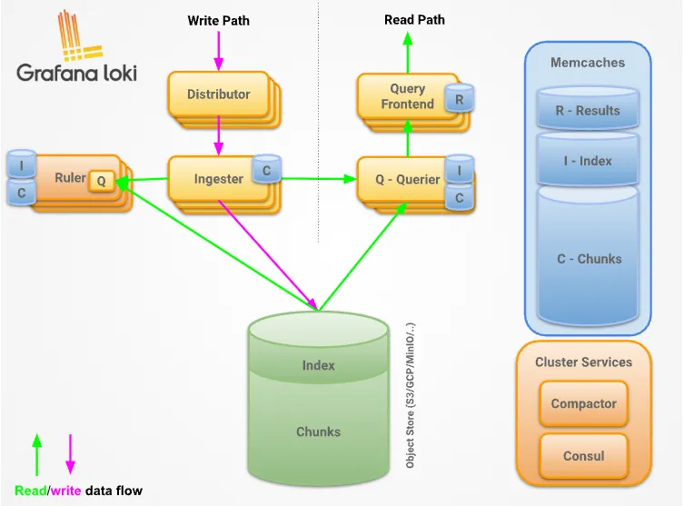

Linux: Loki
LAG 日志管理架构和组件
可观测性
可观测性是 通过系统外部输出的数据(指标、日志、链路追踪),无需改动代码、不侵入系统内部,就能推断系统内部状态、定位问题根因 的能力,源自控制论,后广泛用于分布式IT系统(云原生)微服务)。
总之:不知道系统会出什么错,但仅凭外部观测数据,就能:搞清楚哪里出问题、为什么出问题。
三大核心支柱
- 指标Metrics 数值型时序数据，如CPU使用率、QPS、错误率、延迟、队列长度。适合告警、趋势监控。产品如：zabbix、prometheus。
- 日志Logs 离散文本事件，程序打印的运行记录,包含错误堆栈、业务上下文。适合问题细节排查。
- 链路追踪Traces 记录一次请求跨多个服务完整调用路径，每个环节耗时、错误。专门解决微服务分布式调用故障定位。产品如：skywalking
主流日志管理方案对比
- ELK: Elasticsearch + Logstash + Kibana(传统经典)
- ELFK: Elasticsearch + Filebeat + Logstash + Kibana(生产最常用的 ES 分层架构)
- EFK: Elasticsearch + Fluent-Bit + Kibana(K8s 轻量化 ES 栈)
- PLG: Promtail + Loki + Grafana( 旧版Loki栈，2026-03式 EOL，新项目不再推荐)
- LAG: Loki + Alloy + Grafana(新一代，Promtail 已经EOL，代 Promtail 采集)
对比
| 对比维度 | ELFK | EFK | PLG(旧) | LAG(新) |
| 组件构成 | ||||
| 索引模型 | 全文倒排索引 | 全文倒排索引 | 仅索引标签 labels，正文不建索引 | 仅索引标签 labels，正文不建索引 |
| 存储成本 | 高，原始日志1.5-3倍 | 高 | 很低，约 ES 的 1/10-1/20 | 很低，约 ES 的 1/10-1/20 |
| 资源消耗 | 高(JVM 吃内存 CPU) | 中等； Fluntet-Bit 轻量 agent | 低 | 低; Alloy 单二进制 |
| 查询能力 | 全文检索极强、复杂聚合、KQL | 同ELK | 标签过滤极快；无全局全文 | 同PLG；Alloy 同时采集日志/指标 |
| 索引，大范围关键词搜索慢 | /trace | |||
| 运维复杂度 | 高，分片/JVM/版本严格对齐 | 中高；ES 依旧重 | 低；Loki 支持对象存储 S3/OSS | 中； River 组件式配置学习成本 |
| 核心优势 | 插件极多，日志分析、审计、安全 SIEM | Fluent-Bit 适合 k8s DaemonSet | 成本极低； 和 Prometheus/Grafana | 单 Agent 统一可观测采集 |
| 能力强，分层架构：Filebeat 本机 | 资源占用低 | 生态打通；LogQL 类似 PromQL | (Logs+Mertics+Trace)；替代 | |
| 采集，Logstash 集中过滤转换， | Promtail；组件模式 forward_to； | |||
| 生产 ES 标准架构 | 和 OTel 生态兼容 | |||
| 主要短板 | 整套组件多，ES 集群调优门槛高， | ES 存储成本、运维负担 | 全局模糊检索弱；标签设计很关键， | 大范围全文检索性能弱； |
| 成本昂贵 | 没有减少 | 标签爆炸会压垮 Loki | River 配置模型需要学习 | |
| 适用场景 | 大规模生产 ES，千万级日志吞吐， | k8s 环境，想用 ES 但希望采集 | 云原生 k8s，主要用于故障 | 云原生、微服务、k8s； |
| 需要复杂日志解析转换，专职 ES 运维团队 | Agent 轻量化 | 排查，已有 grafana/prometheus | 一套 agent 搞定全部摇测； | |
| 控制存储成本，新项目不选 | 优先新项目采用 |
全文倒排：以关键词反查全文中的位置。索引量比原始日志大。
LAG 架构和组件
Loki 概述
https://grafana.com/docs/loki/latest/
Loki是受Prometheus启发而设计的 水平可扩展、高可用、多租户日志聚合系统 。设计目标是低成本、易于运维。
它不对日志正文内容建立索引,仅为每一条日志流的标签集合建立索引。
注意:日志行的全部内容仍然可以被检索;标签的作用是在查询时缩小待检索日志范围,从而提升查询效率。
Loki 项目由 Grafana Labs 于 2018 年启动，在西雅图 KubeCon 大会正式对外发布。
项目基于 AGPLv3开源协议 对外发布，是开源日志聚合系统，深度绑定 Grafana 生态。
Grafana Labs 主导 Loki 项目的研发工作，在 Grafana 中提供一流的 Loki 适配能力，保障 Grafana Labs 的客户能够获取所需的 Loki 技术支持与功能特性。
核心设计思路: 只索引标签(元数据)，不索引日志全文 ，大幅降低存储与索引开销。
优势
- 接入简单: 多客户端支持，不限日志来源与日志格式。
- 对象存储持久化: PB 级大规模，高吞吐，低成本高可靠。
- 日志衍生能力: 从日志生成指标、配置告警规则。
- 不强制入库格式: 采集时无需预先格式化，解析格式化延迟到查询时时处理。
- 实时日志查看: 支持 tail 实时流、自动刷新、按日期检索历史日志。
- 云原生原生集成: 与 Prometheus、Grafana、K8s 深度整合；单 UI 统一观测指标、日志、链路追踪。
Loki Stack组成
https://grafana.com/docs/loki/latest/get-started/overview/
套标准基于 Loki 的日志栈由三大组件构成:
- 采集代理(Agent):
- 日志代理/客户端，例如 Grafana Alloy。
- 代理采集日志，通过附加标签将日志归类为日志流，并经由 HTTP 接口把日志流推送至 Loki。
- Loki 服务端:
- 核心服务程序，负责日志接收、持久化存储以及日志查询运算。
- Grafana:
- 用于查询并可视化展示日志数据。你也可以通过命令行工具 LogCLI 或直接调用 Loki 原生 API 查询日志。
Loki架构
https://grafana.com/docs/loki/latest/get-started/architecture/
Grafana Loki采用微服务架构，设计为水平可扩展的分布式系统。系统包含多个组件，可独立、并行运行。

distributor #分发器。接收日志，根据一致性哈希路由到 ingester ingester #写入实例。内存接收日志，生成 chunk 日志块 consistent hash ring #一致性哈希环。Loki 用于分片日志流的机制 replication factor #复制因子。日志副本数量 quorum #法定多数。写成功需要应答的副本数量 chunk #日志块。Loki存储日志的最小单元，租户+标签唯一 query-frontend #查询前端。接收用户查询，拆分查询任务 query-scheduler #查询调度器。分发子查询任务给 querier querier #查询器。执行实际查询，合并 ingester 与后端存储数据 backing store #后端存储。对象存储，保存已经落盘的 chunk deduplicates #去重。处理多副本带来的重复日志 X-Scope-OrgID #租户请求头。Loki 多租户识别标识
Loki 三种部署模式
Monolithic 单体模式（All-in-One）
把 loki 组件所有功能集成在二进制文件中。
https://grafana.com/docs/loki/latest/setup/install/helm/install-monolithic/
最简单的运行模式是单体部署模式。
通过设置命令行参数 -target=all 启用单体模式。该模式将 Loki 的全部微服务组件运行在同一个进程中，表现为单个二进制程序或 Docker 镜像。
单体模式适合快速上手体检 Loki，也适合用于每日读写数据量最高约 20GB 的小规模场景。
Simple Scalable
https://grafana.com/docs/loki/latest/get-started/deployment-modes/#simple-scalable
简单可扩展部署模式(SSD模式)现已废弃，Loki4.0 将不再支持 SSD 模式运行。
需要规划将 SSD 模式迁移至 微服务模式 或者高可用单体(HAmonolithic)部署模式。
组件拆分三组独立扩容:
- WritePath: Distributor + Ingester(写入链路)I
- ReadPath: QueryFrontend + Querier(查询链路)
- Backend: Compactor + Ruler + IndexGateway(后台任务)
- 适用: TB 级日志,绝大多数企业生产环境
- 配套网关 Nginx 实现读写分离路由
Microservices mode
微服务部署模式将 Loki 的各个组件作为相互独立的进程运行，该部署模式也被称作分布式部署模式。
- 把组件拆分为独立微服务，粒度更细，可对每一个组件单独扩缩容，更好适配业务场景。
- 微服务模式可以实现更高的集群运行效率，但同时它也是部署与维护复杂度最高的模式。
- 仅建议超大规模 Loki 集群，或是需要对扩缩容、集群运维做精细化管控的运维人员使用微服务模式。
- 微服务模式专为 Kubernetes 环境设计，社区提供 Helm Chart 用于部署微服务模式的 Loki。
启动每个进程时需要指定对应的target(组件目标)。包含如下组件:
- BloomBuilder(实验性)
- Bloom Gateway(实验性): 对外暴露 Loki API，将请求代理转发到对应的 Loki 内部组件。
- Bloom Planner(实验性)
- Compactor(压缩器): 对已存储的数据执行压缩与处理。压缩合并自志增快
- Distributor(分发器): 对收到的写入请求做分发处理。分发器，接收 Aggent 日志写入请求，转发给 Ingester
- Index Gateway(索引网关): 负责索引相关处理。索引网关，代理索引访询问
- Ingester(写入接收组件):负责日志数据的摄入写入。接收日志，内存处理后写入对象存储，默认开启可用区感知复制；配置
ingester.replicas: 3时，会创建 3 套 StatefulSet(zon、zone-c)，每套各1个副本。 - OverridesExporter(覆盖配置导出器)
- Querier(查询器): 执行日志查询处理。
- QueryFrontend(查询前端): 管理前端查询请求。查询前端，做查询排队、分片、缓存
- QueryScheduler(查询调度器): 负责查询任务调度。查询调度器，分发发查询任务
- Ruler(规则/告警引擎): 规则引擎，执行日志规则、生成指标、告警
Loki 二进制部署
架构：Loki + Alloy + MinIO + Grafana + AlertManager
说明：
- 纯二进制原生部署，无需要依赖 Docker、k8s 容器环境。
- 架构实现：日志采集 –> 结构化清洗 –> 压缩存储 –> 可视化查询 –> 告警，轻量化场景，资源占用低、运维简单、稳定性高。
技术栈选型
- 日志服务端：grafana loki
- 日志采集端：grfana alloy
- 对象存储：minio
- 可视化平台：grafana 原生部署
- 测试工具：flog 二进制日志压测工具。
核心数据流：
- Flog 模拟日志/业务日志 –> Alloy 采集监听 –> 日志结构化解析、动态打标签、清洗 –> 批量推送 Loki –> Loki TSDB 索引构建 + 压缩 –> Grafana 可视化查询、LogQL 聚合指标化 –> AlertManager 日志告警。
部署环境
10.103.236.201 Loki/Grafana/AlertManager 2C/2G ubuntu 10.103.236.202 Alloy/Flog/Docker/MinIO 2C/2G ubuntu
准备日志
应用日志、容器日志
flog 准备应用日志文件
二进制安装 log 日志压测工具 Flog
安装 go 语言
# 安装 go 语言 GO_VERSION=1.25.0 OS=$(uname -s | tr 'A-Z' 'a-z') ARCH=$(uname -m | sed 's/x86_64/amd64/;s/aarch64/arm64/') PLATFORM="$OS-$ARCH" wget https://studygolang.com/dl/golang/go${GO_VERSION}.${PLATFORM}.tar.gz tar xf go${GO_VERSION}.${PLATFORM}.tar.gz -C /usr/local/ #设置环境变量 cat >/etc/profile.d/go.sh<<\EOF export GOROOT=/usr/local/go export GOPATH=/go/lib:/go/goproject #export GOBIN=/go/gobin export PATH=$PATH:$GOROOT/bin:$GOBIN EOF mkdir /go/{lib,goproject,gobin} -pv mkdir /go/goproject/src -pv # 生效 source /etc/profile go env -w GOPROXY=https://goproxy.cn,direct go version
编译安装 flog
FLOG_VERSION=0.4.4 source /etc/profile # 编译安装 flog mkdir -p $GOPATH/src/flog cd $GOPATH/src/flog git clone --depth 1 --branch v${FLOG_VERSION} https://github.com/mingrammer/flog.git cd flog CGO_ENABLED=0 go build -o flog . cp ./flog /usr/local/bin/ flog -h
systemd 开机配置
cat > /lib/systemd/system/flog.service <<EOF [Unit] Description=Flog fake log generator for loki test After=network.target [Service] Type=simple ExecStart=/usr/local/bin/flog -f json -d 200ms -l # 每 200 ms 生成日志 Restart=always StandardOutput=journal StandardError=journal [Install] WantedBy=multi-user.target EOF systemctl daemon-reload && systemctl enable --now flog systemctl status flog # 安装 rsyslog apt update apt install rsyslog -y systemctl enable --now rsyslog systemctl status rsyslog # 查看 json 日志 journalctl -u flog -f tail -f /var/log/syslog
使用 flog 生成其他格式日志
flog -f json -t log -o /var/log/flog/access_json.log -d 300ms -l -w & flog -f apache_common -t log -o /var/log/flog/access_apache_common.log -d 300ms -l -w & flog -f apache_combined -t log -o /var/log/flog/access_apache_combined.log -d 300ms -l -w & #查看日志 head -1 /var/log/flog/access_json.log head -1 /var/log/flog/access_apache_common.log head -1 /var/log/flog/access_apache_combined.log
准备容器日志
#启动两个容器生成日志 docker run -d --name mynginx -p 80:80 \ --label service=nginx \ --label env=prod \ --label version=1.30.0 \ ealen/echo-server:latest docker run -d --name myapp -p 8080:80 \ --label service=myapp \ --label env=dev \ --label ver1.0 \ nbilal786/myapp:latest # 安装 nerdctl 启动容器 apt install -y wget slirp4netns cd /tmp wget https://files.m.daocloud.io/github.com/containerd/nerdctl/releases/download/v2.3.4/nerdctl-2.3.4-linux-${ARCH}.tar.gz tar -zxvf nerdctl-2.3.4-linux-${ARCH}.tar.gz mv nerdctl /usr/local/bin/ chmod +x /usr/local/bin/nerdctl sysctl -a |grep ip_forward # 确认开启内核 IP 转发 # mynginx nerdctl run -d --name mynginx -p 80:80 \ --label service=nginx \ --label env=prod \ --label version=1.30.0 \ ealen/echo-server:latest # myapp nerdctl run -d --name myapp -p 8080:80 \ --label service=myapp \ --label env=dev \ --label ver=1.0 \ nbilal786/myapp:latest root@master01:~# kubectl get pod NAME READY STATUS RESTARTS AGE echo-647c98d9f-zrpdg 1/1 Running 0 29m myapp-8b88f5cdd-5nbx4 1/1 Running 0 3m50s #访问容器,生成容器日志 while true; do curl 10.103.236.202;sleep 1;do & while true; do curl 10.103.236.202:8080;sleep 1;do &
对象存储部署和配置
安装 minIO
注意：2025-04-22 之后的版本功能缺失。
OS=$(uname -s | tr 'A-Z' 'a-z') ARCH=$(uname -m | sed 's/x86_64/amd64/;s/aarch64/arm64/') PLATFORM="$OS-$ARCH" wget https://dl.minio.org.cn/server/minio/release/${PLATFORM}/minio chmod +x minio cp minio /usr/local/bin #MINIO_ROOT_USER=admin MINIO_ROOT_PASSWORD=password ./minio server /mnt/data --console-address ":9001" --address ":9000" # 9001 为管理控制台，9000 为 api 端口 # 编译功能完善的 minio MINIO_VERSION=RELEASE.2025-04-22T22-12-26Z git clone --depth 1 --branch ${MINIO_VERSION} https://github.com/minio/minio.git cd minio CGO_ENABLED=0 go build -o minio . cp ./minio /usr/local/bin/ minio --version # 生成存储和启动配置 mkdir /data/minio -pv groupadd -r minio-user useradd -M -r -g minio-user minio-user chown minio-user:minio-user /data/minio cat >/etc/default/minio<<EOF MINIO_ROOT_USER=admin MINIO_ROOT_PASSWORD=Admin@123456 MINIO_VOLUMES="/data/minio" MINIO_OPTS="--console-address :9001 --address :9000" EOF cat >/lib/systemd/system/minio.service<<\EOF [Unit] Description=MinIO Documentation=https://min.io/docs/minio/linux/index.html Wants=network-online.target After=network-online.target AssertFileIsExecutable=/usr/local/bin/minio [Service] WorkingDirectory=/usr/local User=minio-user Group=minio-user ProtectProc=invisible EnvironmentFile=-/etc/default/minio ExecStartPre=/bin/bash -c "if [ -z \"${MINIO_VOLUMES}\" ]; then echo \"Variable MINIO_VOLUMES not set in /etc/default/minio\"; exit 1; fi" ExecStart=/usr/local/bin/minio server $MINIO_OPTS $MINIO_VOLUMES Restart=always LimitNOFILE=65536 TasksMax=infinity TimeoutStopSec=infinity SendSIGKILL=no [Install] WantedBy=multi-user.target EOF systemctl daemon-reload && systemctl enable --now minio.service systemctl status minio.service journalctl -f -u minio.service
配置
创建 Access Key
Access Key: d3qFSWw6zosYK4xyHeZC Secret Key: iJ8gwfA5lZ3xhhf0n0EarjAkJgByNJKOnZWjJsUd
创建 Bucket
- UI 操作，桶名 loki
安装客户端工具 mc
# 编译功能完善的 minio MC_VERSION='RELEASE.2025-04-16T18-13-26Z' git clone --depth 1 --branch ${MC_VERSION} https://github.com/minio/mc.git cd mc CGO_ENABLED=0 go build -o mc . cp ./mc /usr/local/bin/ mc --version # 配置客户端连接 echo 10.103.236.202 minio.jasper.org >> /etc/hosts mc alias set minio http://minio.jasper.org:9000 d3qFSWw6zosYK4xyHeZC iJ8gwfA5lZ3xhhf0n0EarjAkJgByNJKOnZWjJsUd mc alias ls minio # 测试 mc admin info minio # 查看磁盘空间等信息 mc ls minio # 查看桶信息
Loki 二进制部署和配置
二进制安装
LOKI_VERSION=3.7.8 OS=$(uname -s | tr 'A-Z' 'a-z') ARCH=$(uname -m | sed 's/x86_64/amd64/;s/aarch64/arm64/') PLATFORM="$OS-$ARCH" wget https://github.com/grafana/loki/releases/download/v${LOKI_VERSION}/loki-${PLATFORM}.zip unzip loki-${PLATFORM}.zip install -m 755 loki-${PLATFORM} /usr/local/bin/loki loki --version
loki 配置
echo 10.103.236.202 minio.jasper.org >> /etc/hosts mkdir -p /etc/loki cat >/etc/loki/loki.yaml <<\EOF auth_enabled: false server: http_listen_port: 3100 http_listen_address: 0.0.0.0 log_level: info common: path_prefix: /data/loki # minio 对象存储 storage: s3: endpoint: minio.jasper.org:9000 bucketnames: loki access_key_id: d3qFSWw6zosYK4xyHeZC secret_access_key: iJ8gwfA5lZ3xhhf0n0EarjAkJgByNJKOnZWjJsUd # minio 使用 http insecure: true # 强制 path style s3forcepathstyle: true replication_factor: 1 ring: kvstore: store: inmemory # loki v3.x 推荐 TSDB 索引 schema_config: configs: - from: 2024-01-01 # TSDB 索引 store: tsdb # 对象存储改为 mino object_store: s3 schema: v13 index: prefix: index_ period: 24h # 写入组件 ingester: # WAL 仍然保留本地 wal: enabled: true dir: /data/loki/wal chunk_idle_period: 5m max_chunk_age: 1h # TSDB 压缩 compactor: # 本地临时目录 working_directory: /data/loki/compactor compaction_interval: 10m retention_enabled: true # 删除请求存储 delete_request_store: s3 limits_config: # 日志保存 30 天 retention_period: 30d max_query_series: 10000 ingestion_rate_mb: 10 ingestion_burst_size_mb: 20 # 告警规则 ruler: alertmanager_url: http://127.0.0.1:9093 storage: type: local local: directory: /etc/loki/rules rule_path: /data/loki/rules-temp ring: kvstore: store: inmemory enable_api: true EOF # 语法检查 loki -config.file=/etc/loki/loki.yaml -verify-config
配置说明
auth_enabled: false #关闭Loki内置认证,不需要登录鉴权,内网环境使用 server: #HTTP服务配置块 http_listen_port: 3100 #Loki对外HTTP端口,默认3100 http_listen_address: 0.0.0.0 #监听所有网卡,允许外部访问 log_level: info #Loki自身日志输出级别info/debug/warn/error common: #公共配置,多个组件共享 path_prefix: /data/loki #本地数据根目录,wal、临时文件存放根路径 # minio 对象存储 storage: #对象存储配置,日志chunk、索引存 MinIO S3 兼容在储存 s3: endpoint: minio.jasper.org:9000 #MinIO服务地址端口 bucketnames: loki #MinIO桶名称,loki所有数据存在这个bucket access_key_id: d3qFSWw6zosYK4xyHeZC secret_access_key: iJ8gwfA5lZ3xhhf0n0EarjAkJgByNJKOnZWjJsUd # minio 使用 http insecure: true #true 使用http,关闭https证书校验 # 强制 path style s3forcepathstyle: true #MinIO必须开启,使用path模式访问s3,不使用虚拟host模式 replication_factor: 1 #副本数,单机部署写1;集群部署大于1 ring: #一致性ring配置,单机使用内存存储ring信息 kvstore: store: inmemory #ring元数据存内存,单机专用;集群改用etcd # loki v3.x 推荐 TSDB 索引 schema_config: #索引schema配置,定义索引存储格式 configs: - from: 2024-01-01 #该schema生效起始时间,早于该时间的数据不使用此配置 # TSDB 索引 store: tsdb #使用TSDB索引(Lokiv3推荐,替代原先boltdb-shippper) # 对象存储改为 mino object_store: s3 #索引文件存放后端:s3(minio) schema: v13 #schema版本号,v13适配tsdb index: prefix: index_ #对象存储里索引文件名称前缀 period: 24h #索引分片周期,每24小时生成一份独立索引 # 写入组件 ingester: #ingester:接收日志写入,内存攒chunk,刷写到对象存储 # WAL 仍然保留本地 wal: enabled: true #开启WAL预写日志,宕机防止内存日志丢失 dir: /data/loki/wal #WAL本地磁盘存储目录 chunk_idle_period: 5m #chunk空闲5分钟,没有新数据就刷盘到对象存储 max_chunk_age: 1h #chunk最长存活1小时,无论是否空闲强制刷盘 # TSDB 压缩 compactor: #TSDB压缩组件,合并小索引块、执行数据过期删除 # 本地临时目录 working_directory: /data/loki/compactor #compactor工作临时目录,压缩过程中间文件 compaction_interval: 10m #压缩任务执行间隔,每10分钟跑一次压缩 retention_enabled: true #开启数据过期清理,配合retention_period删除旧片日志 # 删除请求存储 delete_request_store: s3 #删除请求记录保存到s3对象存储 limits_config: #全局限流、配额、保存周期配置 # 日志保存 30 天 retention_period: 30d #全局日志保留时长30天,到期自动删除 max_query_series: 10000 #查询最大返回时序序列数量,防止大查询压垮loki ingestion_rate_mb: 10 #单实例日志写入速率上限10MB/s ingestion_burst_size_mb: 20 #写入突发流量上限20MB # 告警规则 ruler: #ruler组件:加载告警规则,执行LogQL,产生告警推送给aalertmanager alertmanager_url: http://127.0.0.1:9093 #Alertmanager接收告警的地址 storage: #ruler规则文件存储配置 type: local #规则使用本地文件模式 local: directory: /etc/loki/rules #告警规则yam1文件存放目录 rule_path: /data/loki/rules-temp #ruler运行时临时缓存目录 ring: kvstore: store: inmemory #ruler ring,单机内存存储 enable_api: true #开启ruler http API,支持curl上传校验规则,调试用
http://10.103.236.201:3100/ring
配置错误排查-ui 还没有前端
# 查找当前版本的配置 /usr/local/bin/loki -help 2>&1 | grep -- '-ui\.' # 带上配置文件再列 target /usr/local/bin/loki -config.file=/etc/loki/loki.yaml -list-targets # 加载后的 ui 块实际长什么样 /usr/local/bin/loki -config.file=/etc/loki/loki.yaml -print-config-stderr 2>&1 | grep -A 25 '^ui:' # 启动日志里 ui 相关的行 grep -i -E 'ui|cluster' /var/log/loki/loki.log | tail -40
systemd 开启自启配置
mkdir -p /var/log/loki
cat >/lib/systemd/system/loki.service <<EOF
[Unit]
Description=Grafana Loki Log Aggregator Service
Documentation=https://grafana.com/docs/loki/latest
After=network-online.target
[Service]
Type=simple
User=root
ExecStart=/usr/local/bin/loki -config.file=/etc/loki/loki.yaml
Restart=always
RestartSec=5
StandardOutput=append:/var/log/loki/loki.log
StandardError=append:/var/log/loki/loki-error.log
LimitNOFILE=65536
[Install]
WantedBy=multi-user.target
EOF
systemctl daemon-reload && systemctl enable --now loki
systemctl status loki
journalctl -f -u loki
验证
# 自动生成相关文件 root@master01:~/.jasper# ls /data/loki/ compactor tsdb-shipper-active tsdb-shipper-cache wal # 查看 loki 相关服务 root@master01:~/.jasper# curl -s http://127.0.0.1:3100/services querier => Running ingester => Running query-frontend => Running server => Running query-scheduler-ring => Running ring => Running analytics => Running query-scheduler => Running rule-evaluator => Running query-frontend-tripperware => Running compactor => Running store => Running ingester-querier => Running ruler => Running cache-generation-loader => Running memberlist-kv => Running distributor => Running root@master01:~/.jasper# curl -s http://127.0.0.1:3100/ready Ingester not ready: waiting for 15s after being ready root@master01:~/.jasper# curl -s http://127.0.0.1:3100/ready ready
Alloy 二进制部署和配置
二进制安装
类似于 filebeat 收集日志
ALLOY_VERSION=1.19.2 OS=$(uname -s | tr 'A-Z' 'a-z') ARCH=$(uname -m | sed 's/x86_64/amd64/;s/aarch64/arm64/') PLATFORM="$OS-$ARCH" wget https://github.com/grafana/alloy/releases/download/v${ALLOY_VERSION}/alloy-${PLATFORM}.zip unzip alloy-${PLATFORM}.zip install -m 755 alloy-${PLATFORM} /usr/local/bin/alloy alloy -v
alloy 配置
grafana alloy 配置文件格式说明
使用标准 River 语法构建采集与解析 Pipeline
Grafana Alloy 使用的是 Grafana 自研的配置语言，称为 River(其法设计灵感大量借鉴了 HashiCorp 的 HCL，即 Terraform 的配置语言)。
Alloy 的 River 配置本质是 组件拼图+显式管道 模型，数据流需要手动串联。
日志采集典型链路:
local.file_match发现日志文件 →loki.sounce.file读取文件 →loki.process处理/转换日志 →loki.write推送后端每一步通过forward_to=[组件名.标签receiver]显式把输出传给下一个组件的接收端口。
配套 Alloy 最简示例
// 发现日志文件 local.file_match "log_files" { path_targets = [{__path__ = "/var/log/*.log"}] } // 读取文件，forward_to 将读取的日志输出传递给 loki.process loki.source.file "read_log" { targets = local.file_match.log_files.targets forward_to = [loki.process.filter.receiver] } // 处理日志，再转发给 loki.write loki.process "filter" { stage.drop { expression = "level=~\"debug\"" } forward_to = [loki.write.loki_backend.receiver] } // 推送至 Loki 后端 loki.write "loki_backend" { endpoint { url = "http://loki:3100/loki/api/v1/push" } }
生产环境中 Docker 日志采集建议
- 使用
discovery.docker自动发现容器 - 使用
discovery.relabel清洗 metadata - 只保留低基数 label
- 不把
clientip,path,user-agent等高基数字段作为 loki label
alloy 配置
mkdir -p /etc/alloy cat >/etc/alloy/config.alloy <<\EOF // systemd journal 采集 flog.service loki.source.journal "flog_journal" { // 使用 matches 属性，注意 systemd 单元过滤需要加上 _SYSTEMD_UNIT= matches = "_SYSTEMD_UNIT=flog.service" labels = { job = "flog-journal", env = "prod", } forward_to = [ loki.process.flog_journal.receiver, ] } // journal 日志处理 loki.process "flog_journal" { stage.json { expressions = { level = "level", method = "method", path = "path", status = "status", } } stage.labels { values = { level = "", status = "", } } forward_to = [loki.write.loki_server.receiver] } // ========================= // 定义 flog 文件日志 local.file_match "flog_files" { path_targets = [ { __path__ = "/var/log/flog/access_json.log", job = "flog-json-file", env = "prod", format = "json", }, { __path__ = "/var/log/flog/access_apache_common.log", job = "flog-apache-common", env = "prod", format = "apache_common", }, { __path__ = "/var/log/flog/access_apache_combined.log", job = "flog-apache-combined", env = "prod", format = "apache_combined", }, ] } // 文件日志读取 loki.source.file "flog_files" { targets = local.file_match.flog_files.targets forward_to = [ loki.process.flog_files.receiver, ] } // 文件日志处理 loki.process "flog_files" { // JSON 格式 access.log stage.match { selector = "{format=\"json\"}" stage.json { expressions = { level = "level", method = "method", path = "path", status = "status", } } stage.labels { values = { level = "", status = "", } } } // Apache Common stage.match { selector = "{format=\"apache_common\"}" stage.regex { expression = "^(?P<ip>\\S+) (?P<ident>\\S+) (?P<user>\\S+) \\[(?P<time>.*?)\\] \"(?P<method>\\S+) (?P<path>.*?) (?P<proto>.*?)\" (?P<status>\\d+?) (?P<size>\\d+)" } stage.labels { values = { method = "", status = "", // clientip = "ip"，不要把 ip, path 放进 labels，高基数标签，会打爆 loki 索引 } } } // Apache Combined stage.match { selector = "{format=\"apache_combined\"}" stage.regex { expression = "^(?P<ip>\\S+) (?P<ident>\\S+) (?P<user>\\S+) \\[(?P<time>.*?)\\] \"(?P<method>\\S+) (?P<path>.*?) (?P<proto>.*?)\" (?P<status>\\d+) (?P<size>\\d+) \"(?P<referer>.*?)\" \"(?P<agent>.*?)\"" } stage.labels { values = { method = "", status = "", } } } forward_to = [ loki.write.loki_server.receiver, ] } // 写入 loki loki.write "loki_server" { endpoint { url = "http://10.103.236.201:3100/loki/api/v1/push" } } // ========================= // containerd Pod 容器日志 // ========================= // 1) 发现所有容器日志文件 local.file_match "pod_logs" { path_targets = [{ __path__ = "/var/log/pods/*/*/*.log", job = "containerd-pods", node = constants.hostname, env = "prod", }] sync_period = "10s" } // 2) 从文件路径里提取 namespace / pod / container 标签 // /var/log/pods/kube-system_calico-node-222ml_b1223a0a-.../calico-node/4.log discovery.relabel "pod_logs" { targets = local.file_match.pod_logs.targets rule { source_labels = ["__path__"] regex = "/var/log/pods/([^/_]+)_([^/_]+)_([^/]+)/([^/]+)/[0-9]+\\.log" target_label = "namespace" replacement = "$1" } rule { source_labels = ["__path__"] regex = "/var/log/pods/([^/_]+)_([^/_]+)_([^/]+)/([^/]+)/[0-9]+\\.log" target_label = "pod" replacement = "$2" } rule { source_labels = ["__path__"] regex = "/var/log/pods/([^/_]+)_([^/_]+)_([^/]+)/([^/]+)/[0-9]+\\.log" target_label = "container" replacement = "$4" } // 可选：不想收的 namespace 直接丢掉 // rule { // source_labels = ["namespace"] // regex = "kube-system|calico-system" // action = "drop" // } } // 3) tail 文件 loki.source.file "pod_logs" { targets = discovery.relabel.pod_logs.output forward_to = [loki.process.pod_logs.receiver] tail_from_end = true // 首次启动只收新日志，避免灌历史 } // 4) 解析 CRI 格式 // https://grafana.com/docs/alloy/latest/reference/components/loki/loki.process/ loki.process "pod_logs" { // 解析出真实时间戳、stream(stdout/stderr) 标签，并自动拼接 P 标记的分片行 stage.cri {} // filename 是高基数标签，去掉（重启次数变了路径就变，会产生新 series） stage.label_drop { values = ["filename"] } forward_to = [loki.write.loki_server.receiver] } EOF # 检查语法，没有输出就是没问题 alloy validate /etc/alloy/config.alloy alloy fmt /etc/alloy/config.alloy
systemd 开机自启配置
mkdir -p /var/log/alloy
cat >/lib/systemd/system/alloy.service<<\EOF
[Unit]
Description=Grafana Alloy Log Collector Service
Documentation=https://grafana.com/docs/alloy/latest
After=network-online.target
[Service]
Type=simple
User=root
ExecStart=/usr/local/bin/alloy run /etc/alloy/config.alloy --server.http.listen-addr=0.0.0.0:9090
Restart=always
RestartSec=3
StandardOutput=append:/var/log/alloy/alloy.log
StandardError=append:/var/log/alloy/alloy-error.log
LimitNOFILE=65536
[Install]
WantedBy=multi-user.target
EOF
systemctl daemon-reload && systemctl enable --now alloy
systemctl status alloy
journalctl -f -u alloy
查看 alloy 状态，访问页面 http://10.103.236.202:9090/
在 minio 上查看收集到日志数据， 可以看到如下数据。
root@master02:~# mc tree minio/loki
minio/loki
├─ fake
│ ├─ 1bbe7883c50eb257
│ ├─ f3bae548f6d69b62
└─ index
├─ delete_requests
└─ index_20720
└─ fake
Grafana 部署和配置
二进制安装
# wget https://mirrors.tuna.tsinghua.edu.cn/grafana/apt/pool/main/g/grafana/grafana_13.2.2_34846740809_linux_arm64.deb # dpkg -i grafana-enterprise-rpi_13.2.2_34846740809_linux_arm-6.deb # systemctl enable --now grafana-server GRAFANA_VERSION=13.2.2 GRAFANA_FULLVERSION=${GRAFANA_VERSION}_34846740809 OS=$(uname -s | tr 'A-Z' 'a-z') ARCH=$(uname -m | sed 's/x86_64/amd64/;s/aarch64/arm64/') PLATFORM="${OS}_${ARCH}" wget https://dl.grafana.com/grafana-enterprise/release/${GRAFANA_VERSION}/grafana-enterprise_${GRAFANA_FULLVERSION}_${PLATFORM}.tar.gz tar -zxvf grafana-enterprise_${GRAFANA_FULLVERSION}_${PLATFORM}.tar.gz \ --strip-components=2 \ -C /usr/local/bin grafana-${GRAFANA_VERSION}/bin/grafana grafana -v tar xf grafana-enterprise_${GRAFANA_FULLVERSION=}_linux_${ARCH}.tar.gz mv grafana-${GRAFANA_VERSION} /usr/local/grafana
配置
useradd -r -s /bin/false grafana
chown -R grafana:users /usr/local/grafana
mkdir -pv /etc/grafana/provisioning/{access-control,alerting,dashboards,datasources,notifiers,plugins}
mkdir -pv /var/log/grafana /var/lib/grafana/plugins
chown -R grafana:grafana /var/log/grafana /var/lib/grafana /etc/grafana/provisioning
cat <<\EOF> /etc/grafana/grafana.ini
[server]
# 生成外部链接（分享链接、OAuth 回调、告警通知里的跳转 URL）
root_url = http://10.103.236.201:3000
EOF
cat >/lib/systemd/system/grafana-server.service <<\EOF
[Unit]
Description=Grafana Server
After=network.target
[Service]
Type=simple
User=grafana
Group=users
#Grafana 启动的硬性依赖 /usr/local/grafana/conf/defaults.ini
#生效顺序（后者覆盖前者）:
# conf/defaults.ini → grafana.ini → GF_* 环境变量 → 命令行 cfg: 参数
Environment=GF_PATHS_HOME=/usr/local/grafana
Environment=GF_PATHS_CONFIG=/etc/grafana/grafana.ini
Environment=GF_PATHS_DATA=/var/lib/grafana
Environment=GF_PATHS_LOGS=/var/log/grafana
Environment=GF_PATHS_PLUGINS=/var/lib/grafana/plugins
Environment=GF_PATHS_PROVISIONING=/etc/grafana/provisioning
ExecStart=/usr/local/grafana/bin/grafana server \
--homepath=${GF_PATHS_HOME} \
--config=${GF_PATHS_CONFIG} \
cfg:default.log.mode=console \
cfg:default.paths.data=${GF_PATHS_DATA} \
cfg:default.paths.logs=${GF_PATHS_LOGS} \
cfg:default.paths.plugins=${GF_PATHS_PLUGINS} \
cfg:default.paths.provisioning=${GF_PATHS_PROVISIONING}
Restart=on-failure
RestartSec=5
[Install]
WantedBy=multi-user.target
EOF
systemctl daemon-reload && systemctl enable --now grafana-server
systemctl status grafana-server
journalctl -u grafana-server -f
journalctl -u grafana-server -n 30 --no-pager | grep -i "config\|root_url\|listen"
- UI 界面：
http://<ip>:3000/，默认账号密码：admin/admin - 增加 loki 数据源：http://127.0.0.1:3100/
- 查看日志 Drilldown –> Grafana Logs Drilldown
LogQL 可视化展示
进入 GrafanaExplore 界面，选择 Loki 数据源
Grafana LogQL实战查询
#基础日志检索: {job="flog-apache-common"} #指定日志过滤: {filename="/var/log/flog/access_apache_common.log", status="200",method="POST"} #LogQL指标化:日志产生速率QPS rate({status="401"}[1m]) #按日志级别分组统计 sum by(job)(rate({status="401"}[1m])) #统计nginx的容器的客户端IP sum by(clientip)(count_over_time({container="nginx"} |pattern `<clientip> - - [<time>] "<method> <path> <protocol>" <status><size><rest>`[5m])) #统计nginx的状态码 sum by(status)(count_over_time({service="nginx"}[5m])) #统计请求方法 sum by(method)(count_over_time({service="nginx"}[5m])) sum by(env) (count_over_time({container="calico-node"} | pattern `<pod>` [5m])) {env="prod", container =~"sp.*"}
AlerManager 告警
二进制安装
ALERT_VERSION=0.34.1 OS=$(uname -s | tr 'A-Z' 'a-z') ARCH=$(uname -m | sed 's/x86_64/amd64/;s/aarch64/arm64/') PLATFORM="${OS}-${ARCH}" wget https://github.com/prometheus/alertmanager/releases/download/v${ALERT_VERSION}/alertmanager-${ALERT_VERSION}.${PLATFORM}.tar.gz tar -zxvf alertmanager-${ALERT_VERSION}.${PLATFORM}.tar.gz \ --strip-components=1 \ -C /usr/local/bin \ alertmanager-${ALERT_VERSION}.${PLATFORM}/{alertmanager,amtool}
alertmanager 配置
useradd -r -s /bin/false alertmanager mkdir -pv /etc/alertmanager /data/alertmanager chown -R alertmanager:alertmanager /etc/alertmanager /data/alertmanager cat <<\EOF> /etc/alertmanager/alertmanager.yml global: resolve_timeout: 1m # 邮件信息 smtp_from: "xxxx@163.com" smtp_smarthost: "smtp.163.com:465" smtp_hello: "163.com" smtp_auth_username: "xxx@163.com" smtp_auth_password: "Nxxx" # 授权码 smtp_require_tls: false route: group_by: ['instance', 'cluster'] group_wait: 10s group_interval: 10s repeat_interval: 10s receiver: 'email' receivers: - name: 'email' email_configs: - to: 'xcwhome@163.com' send_resolved: true headers: {Subject: "[WARN] {{ .CommonLabels.alertname }}"} inhibit_rules: - source_matchers: [severity="critical"] target_matchers: [severity="warning"] equal: [alertname, dev, instance] EOF # 语法检测 amtool check-config /etc/alertmanager/alertmanager.yml cat >/lib/systemd/system/alertmanager.service <<\EOF [Unit] Description=Alertmanager Server After=network.target [Service] Type=simple User=grafana Group=users ExecStart=/usr/local/bin/alertmanager \ --config.file=/etc/alertmanager/alertmanager.yml \ --storage.path=/data/alertmanager \ --cluster.advertise-address=0.0.0.0:9093 \ --data.retention=240h \ --web.route-prefix=/ \ --web.external-url=https://alert.jasper.org Restart=on-failure RestartSec=5 [Install] WantedBy=multi-user.target EOF systemctl daemon-reload && systemctl enable --now alertmanager systemctl status alertmanager journalctl -u alertmanager -f journalctl -u alertmanager -f | grep -i "notify\|smtp" # 重新加载配置 curl -X POST http://localhost:9093/-/reload
测试告警
# 调用 api curl --location --request POST 'http://10.103.236.201:9093/api/v2/alerts' \ --header 'Content-Type: application/json' \ --data-raw '[ { "labels": { "alertname":"testAlert", "severity": "critical", "duty": "infra_op|fsy_rd" }, "annotations": { "info": "The disk sda1 is running full2", "summary": "please check the instance example1" } } ]' # 或者使用 amtool amtool alert add alertname=TestEmail severity=critical service=inhouse-service \ --annotation=summary="邮件通道测试" \ --alertmanager.url=http://localhost:9093
配置 loki 实现告警实现告警规则
创建 loki 实现告警规则文件
# 添加告警规则文件 mkdir -p /etc/loki/rules/fake cat >/etc/loki/rules/fake/alert-rule-demo1.yml <<EOF groups: - name: http_response interval: 10s rules: - alert: HighPercentageError expr: |- sum(rate({filename="/var/log/flog/access_json.log", status=~"(4|5).."}[1m])) / sum(rate({filename="/var/log/flog/access_json.log"}[1m])) > 0.5 for: 10s labels: serverty: warning annotations: summary: High request latency - name: nginx_availability interval: 10s rules: - alert: NginxToraffic expr: | absent_over_time({container="calico-node"}[1m]) for: 10s labels: serverty: critical service: nginx annotations: summary: 'nginx 服务无日志' description: | nginx 1 分钟没有产生访问日志， 可能服务异常或无法访问。 EOF # 规则文件自动加载，无需重启 loki 服务，可能通过 API 查看告警规则生效 curl 10.103.236.201:3100/loki/api/v1/rules
k8s 上安装 loki
环境说明
- 对象存储: MinIO
http://10.0.0.101:9000（9001 是 console），桶loki-test - Grafana:
http://10.0.0.101:3000（装在 master01 宿主机上，不在 k8s 内） - 租户:
jasper（Loki 开启多租户，所有读写必须带X-Scope-OrgID
网络拓扑（读写分离）
集群内 Alloy ──写──> loki-gateway.loki.svc.cluster.local [ClusterIP，不暴露]
集群外 Grafana ─查──> http://10.0.0.12 [LoadBalancer，只读网关]
push/otlp/管理接口一律 403
部署形态
- 全部组件都是 Deployment，没有任何 PVC。
| 组件 | kind | /var/loki | 说明 |
|---|---|---|---|
| ingester x3 | Deployment | emptyDir | WAL + tsdb-shipper-active |
| distributor x2 / querier x2 | Deployment | emptyDir | 本就无状态 |
| query-frontend / query-scheduler | Deployment | emptyDir | 本就无状态 |
| index-gateway | Deployment | emptyDir | 只是 tsdb 缓存，丢了从 S3 重下 |
| compactor | Deployment | emptyDir | 只是工作目录 |
| ruler | Deployment | emptyDir | 规则本体在 ConfigMap |
| pattern-ingester | Deployment | emptyDir | 实测内容为空 |
| chunks-cache / results-cache | StatefulSet | — | memcached，chart 自带，需稳定 DNS |
配置与规则文件都是 ConfigMap 挂载，与 PVC 无关 ：
| 内容 | 来源 | 挂载点 |
|---|---|---|
| Loki 主配置 | Secret/ConfigMap（chart 生成） | /etc/loki/config |
| 告警规则 | ConfigMap loki-ruler-rules-jasper |
/etc/loki/rules/jasper |
| 只读网关 nginx | ConfigMap loki-read-gateway |
/etc/nginx/nginx.conf |
| Alloy 采集配置（DaemonSet） | ConfigMap alloy-config |
/etc/alloy |
| Alloy 采集配置（Events） | ConfigMap alloy-events-config |
/etc/alloy |
目录
loki-stack/ ├── README.org # 本文件（部署与验证） ├── COMPONENTS.org # 各组件作用说明、数据流、故障影响速查 ├── PRODUCTION.org # 生产环境方案（AWS 新加坡 + 阿里云香港） ├── cilium-lb-pool.yaml # Cilium LB IPAM 地址池 10.0.0.10-50 ├── cilium-l2-announcement.yaml # Cilium L2 宣告策略 ├── loki/ │ ├── loki-18.13.5.tgz # chart 离线包 │ ├── values-distributed.yaml # 微服务模式（当前运行） │ ├── values-monolithic.yaml # 单体模式（回滚备用） │ └── parts/ │ ├── read-gateway-nginx.conf # 只读网关 nginx 配置（已内嵌进 values） │ └── loki-alerts.yaml # 告警规则（已内嵌进 values） ├── alloy/ │ ├── alloy-1.13.0.tgz # chart 离线包（两个 release 共用） │ ├── values-alloy.yaml # release: alloy —— DaemonSet，Pod 日志 + journal │ ├── config.alloy # ↑ 采集配置，外部 ConfigMap alloy-config │ ├── values-alloy-events.yaml # release: alloy-events —— Deployment 单副本，k8s Events │ ├── config-events.alloy # ↑ 采集配置，外部 ConfigMap alloy-events-config │ └── lq # 查询用的 curl wrapper └── grafana/ ├── dashboard-log-overview.json # 运维：日志总览 ├── dashboard-dev-troubleshoot.json # 研发：排障 ├── dashboard-gateway-access.json # Gateway JSON 访问日志 ├── dashboard-k8s-events.json # Kubernetes 事件 └── make-*.py # 各看板的生成+导入脚本（JSON 由脚本产出）
数据流
┌──────────────── 写路径 ────────────────┐
Alloy (DaemonSet x5) Alloy-events (Deployment x1)
Pod 日志 + 宿主机 journal Kubernetes Events（集群级，故只跑 1 副本）
│ │
│ HTTP push，带 X-Scope-OrgID: jasper
▼ ▼
loki-gateway (nginx, ClusterIP) ← 集群内入口，按 URL 路径分发
│
▼
distributor x2 ──校验/限流/按流哈希──► ingester x3 (RF=3，每条日志写 3 份)
│ │
│ │ 攒够/超时 → flush
└──► pattern-ingester x1 ▼
(日志模式挖掘) MinIO (chunks + index)
▲
│ 周期性压缩、执行保留策略
compactor x1
┌──────────────── 读路径 ────────────────┐
Grafana (集群外)
│ HTTP query，带 X-Scope-OrgID: jasper
▼
loki-read-gateway (nginx, LoadBalancer 10.0.0.12) ← 只读，push/管理接口 403
│
▼
query-frontend x1 ──拆分/缓存──► query-scheduler x1 ──排队──► querier x2
│
┌────────────────────────┼────────────────┐
▼ ▼ ▼
ingester x3 index-gateway x1 MinIO
(查内存中最新数据) (查索引，带本地缓存) (查历史 chunk)
ruler x1 ──独立执行告警规则──► 查询同上 ──► 推送告警到 Alertmanager
一句话概括 ：写路径把日志分片复制到多个 ingester 再落对象存储； 读路径把大查询拆小、排队、分发给多个 querier 并行执行。
loki
安装 helm
curl -fsSL -o get_helm.sh https://raw.githubusercontent.com/helm/helm/main/scripts/get-helm-4 chmod 700 get_helm.sh ./get_helm.sh
准备 helm 仓库
helm repo add grafana-community https://grafana-community.github.io/helm-charts helm repo update kubectl create namespace loki # 1.基础认证 2jptrlpa9kqig$64xvytroot apt install apache2-utils -y htpasswd -c .htpasswd lokiuser # 输入用户密码 kubectl create secret generic loki-basic-auth --from-file=.htpasswd -n loki # 与 Loki 网关进行身份验证 kubectl create secret generic canary-basic-auth \ --from-literal=username=canaryuser \ --from-literal=password=9kqig$64xvytroot \ -n loki
方式1-Loki（简单模式）
cat >values-monolithic.yaml<<\EOF
loki:
commonConfig:
# 单体模式只有 1 个实例，副本因子必须为 1，否则 ring 凑不齐 quorum 导致写入失败
replication_factor: 1
schemaConfig:
configs:
- from: "2024-04-01"
store: tsdb
object_store: s3
schema: v13
index:
prefix: loki_index_
period: 24h
pattern_ingester:
enabled: true
limits_config:
allow_structured_metadata: true
volume_enabled: true
retention_period: 672h # 28 days retention
compactor:
retention_enabled: true
delete_request_store: s3
rulerConfig:
enable_api: true
alertmanager_url: http://prom:9093
querier:
max_concurrent: 4
storage:
type: s3
bucketNames:
chunks: "loki-test"
ruler: "loki-test"
s3:
# MinIO S3 API 端口是 9000（9001 是 console）
endpoint: 10.0.0.101:9000
# 注意：原文件里 AK/SK 写反了，已对调（MinIO AK 20 字符，SK 40 字符）
accessKeyId: d3qFSWw6zosYK4xyHeZC
secretAccessKey: iJ8gwfA5lZ3xhhf0n0EarjAkJgByNJKOnZWjJsUd
s3ForcePathStyle: true
# Allows insecure (HTTP) connections (true/false)
insecure: true
deploymentMode: Monolithic
singleBinary:
replicas: 1
# 不要设 kind: Deployment —— chart 默认的 singleBinary.strategy 含 rollingUpdate.partition，
# 那是 StatefulSet 专有字段，渲染进 Deployment.spec.strategy 会被 API schema 拒绝。
persistence:
enabled: true
#storageClass: local-path
#size: 10Gi
ingester:
replicas: 0
querier:
replicas: 0
queryFrontend:
replicas: 0
queryScheduler:
replicas: 0
distributor:
replicas: 0
compactor:
replicas: 0
indexGateway:
replicas: 0
# Disable minio storage
minio:
enabled: false
backend:
replicas: 0
read:
replicas: 0
write:
replicas: 0
# 节点只有 ~3.2Gi 可用内存，chunks-cache 默认请求 9830Mi 永远调度不上，单体模式下关掉
chunksCache:
enabled: false
resultsCache:
enabled: false
# 入口 svc 走 Cilium LB IPAM（default-pool: 10.0.0.10-50）+ L2 announcement
gateway:
service:
type: LoadBalancer
# 固定 LB IP（Cilium LB IPAM 专用注解），避免 svc 重建后地址漂移
#annotations:
# io.cilium/lb-ipam-ips: "10.0.0.12"
EOF
方式1-Loki（微服务模式）
创建专有用户 AKSK
#MinIO 建专用用户和策略 cat > /tmp/loki-rw.json <<'EOF' { "Version": "2012-10-17", "Statement": [ { "Effect": "Allow", "Action": [ "s3:ListBucket", "s3:GetBucketLocation", "s3:ListBucketMultipartUploads" ], "Resource": ["arn:aws:s3:::loki-test"] }, { "Effect": "Allow", "Action": [ "s3:GetObject", "s3:PutObject", "s3:DeleteObject", "s3:AbortMultipartUpload", "s3:ListMultipartUploadParts" ], "Resource": ["arn:aws:s3:::loki-test/*"] } ] } EOF mc admin policy create minio loki-rw /tmp/loki-rw.json #read -rsp 'loki-svc 密码（自己定，16 位以上）: ' PW; echo PW='Z7oe1M0Vj1jL4Br5QNHo' mc admin user add minio loki-svc "$PW" unset PW mc admin policy attach minio loki-rw --user loki-svc mc admin user svcacct add minio loki-svc # ISDUQEFI14LUZRJ6WEQ2 / kdkweprXAELNZfw1mITWtAX+T4Il+ZvDMWA41Cc9 #最后一条会打印新的 AccessKey / SecretKey，记下来，下一步要用。 #mc alias set lokisvc http://10.0.0.101:9000 <新AK> <新SK> mc alias set lokisvc http://10.0.0.101:9000 ISDUQEFI14LUZRJ6WEQ2 kdkweprXAELNZfw1mITWtAX+T4Il+ZvDMWA41Cc9 #正向——以下每条都必须成功： mc ls lokisvc/loki-test # ListBucket head -c 1024 /dev/urandom > /tmp/perm-small mc cp /tmp/perm-small lokisvc/loki-test/_permtest/small # PutObject mc cat lokisvc/loki-test/_permtest/small > /dev/null # GetObject dd if=/dev/zero of=/tmp/perm-big bs=1M count=160 status=none mc --debug cp /tmp/perm-big lokisvc/loki-test/_permtest/big 2>&1 | grep -c 'partNumber=' #最后那条输出的数字必须大于 0，否则说明文件不够大、没走分片上传，multipart 权限其实没验到——那就把 count=160 加到 320 重来。这是整个策略里我最没把握的部分。 mc rm lokisvc/loki-test/_permtest/small lokisvc/loki-test/_permtest/big # DeleteObject rm -f /tmp/perm-small /tmp/perm-big #反向——以下必须失败（报 AccessDenied）： mc admin info lokisvc # 管理接口，应拒绝 mc ls minio # 先看还有哪些别的桶 mc ls lokisvc/<上面列出的另一个桶> # 应拒绝；只有 loki-test 一个桶就跳过 # 2.创建 secret read -rsp 'AK: ' AK; echo read -rsp 'SK: ' SK; echo kubectl -n loki create secret generic loki-s3-credentials \ --from-literal=AWS_ACCESS_KEY_ID="$AK" \ --from-literal=AWS_SECRET_ACCESS_KEY="$SK" \ --from-literal=AWS_EC2_METADATA_DISABLED=true unset AK SK #步骤 5 渲染核对（先别 upgrade） helm template loki ./loki-18.13.5.tgz -n loki -f values-distributed.yaml > /tmp/after.yaml echo "---- s3 段（不该有 access_key_id / secret_access_key）----" grep -n -A6 '^ s3:' /tmp/after.yaml echo "---- 注入点数量（期望 9）----" grep -c 'name: loki-s3-credentials' /tmp/after.yaml echo "---- flush_on_shutdown ----" grep -n 'flush_on_shutdown' /tmp/after.yaml #旧凭证 mc admin user svcacct disable minio d3qFSWw6zosYK4xyHeZC # 先禁用，观察一天 mc admin user svcacct rm minio d3qFSWw6zosYK4xyHeZC # 确认无异常后再 #出问题的回滚路径 helm -n loki history loki | tail -3 # 记下当前 revision，回滚用 helm rollback loki <记下的 revision> -n loki
AKSK 轮换需要强制重启
# 新建，确认并存 mc alias ls lokisvc mc admin user svcacct add minio loki-svc mc admin user svcacct list minio loki-svc # 更新 Secret kubectl -n loki delete secret loki-s3-credentials read -rsp 'AK: ' AK; echo read -rsp 'SK: ' SK; echo kubectl -n loki create secret generic loki-s3-credentials \ --from-literal=AWS_ACCESS_KEY_ID="$AK" \ --from-literal=AWS_SECRET_ACCESS_KEY="$SK" \ --from-literal=AWS_EC2_METADATA_DISABLED=true unset AK SK # envFrom 的环境变量是容器启动时读一次，不重启就还在用旧凭证 for d in query-scheduler query-frontend querier distributor index-gateway \ compactor ruler pattern-ingester ingester; do kubectl -n loki rollout restart deploy/loki-$d kubectl -n loki rollout status deploy/loki-$d --timeout=180s done #ingester 放最后，它 3 副本 maxSurge=1/maxUnavailable=0，一个个来最慢但全程满足 RF=3 的写入 quorum。 # 禁用旧 key，观察 # 如果还有组件在用旧 key，禁用后立刻会报错。全 0 才继续。 mc admin user svcacct disable minio ISDUQEFI14LUZRJ6WEQ2 sleep 300 for c in distributor ingester querier compactor index-gateway ruler pattern-ingester; do n=$(kubectl -n loki logs deploy/loki-$c --since=5m --all-containers 2>/dev/null \ | grep -icE 'accessdenied|invalidaccesskeyid|signaturedoesnotmatch') printf ' %-22s %s\n' "loki-$c" "$n" done # 删除旧 key mc admin user svcacct rm minio ISDUQEFI14LUZRJ6WEQ2 mc admin user svcacct list minio loki-svc # 应只剩新的那一行 #轮换用户密码（与 Loki 无关，可单独做） read -rsp 'loki-svc 新密码: ' PW; echo mc admin user add minio loki-svc "$PW" # 同名重复 add 即改密码 unset PW mc admin policy attach minio loki-rw --user loki-svc # 确认策略仍在，重复 attach 幂等
# 坑 mc admin user rm minio loki-svc 会连带删掉它名下所有 svcacct，Loki 立刻全挂。
准备文件
Loki 告警规
## Loki 告警规则（租户 jasper） ## ## ===== 自激反馈环（务必理解，否则规则必然误报）===== ## Loki 的 ruler / querier / query-frontend 都会把「正在执行的查询语句」原样 ## 打进 level=info 日志。而 Alloy 又在采集 loki 命名空间的日志，于是任何 ## 「按内容匹配」的规则都会匹配到自己的查询文本，形成自激环。 ## ## 实测：{namespace="loki"} |~ `AccessDenied|...` 匹配 44 条，全部是噪声。 ## ## 解法：Loki 组件日志一律以 `level=` 开头，而查询文本里出现的 level=error / ## AccessDenied 永远不在行首。因此用 `^level=error` 锚定即可精确区分。 ## 实测：加锚定后 → 0 条（正确，当前确实没有存储错误）； ## 单纯的 `^level=error` → 34 条（真实错误行）。 ## ## 跨命名空间的通用规则无法用这个锚定（各应用日志格式不同）， ## 改为直接排除 loki 命名空间——它由下面 loki-self 组专门覆盖。
cat >loki-alerts.yaml <<\EOF
groups:
- name: log-volume
interval: 1m
rules:
- alert: NodeLogShippingStalled
expr: |
count(count by (node) (count_over_time({job="loki/canary", node=~".+"}[15m])))
< count(count by (node) (count_over_time({job="loki/canary", node=~".+"}[24h])))
for: 10m
labels:
severity: warning
component: alloy
annotations:
summary: "有节点的日志采集链路中断"
description: >-
过去 15 分钟只有 {{ $value }} 个节点在上报 canary 心跳，
少于过去 24 小时出现过的节点数。用下面两条查询对比找出是哪个节点：
count by (node) (count_over_time({job="loki/canary"}[24h]))
与 count by (node) (count_over_time({job="loki/canary"}[15m]))
# 整体写入速率突增，可能是某组件在刷日志，会挤占 Loki 写入配额
- alert: LogIngestionSpike
expr: sum(rate({job=~".+"}[5m])) > 500
for: 10m
labels:
severity: warning
component: loki
annotations:
summary: "日志写入速率异常升高"
description: "当前约 {{ $value | printf \"%.0f\" }} 条/秒，limits_config 限流为 8MB/s，请确认是否有组件在刷日志。"
- name: error-rate
interval: 1m
rules:
# 业务命名空间的错误日志速率。
- alert: HighErrorLogRate
expr: |
sum by (namespace) (
rate({namespace=~".+", namespace!="loki"} |~ `(?i)(^|[^a-z])(error|fatal|panic)([^a-z]|$)` [5m])
) > 2
for: 10m
labels:
severity: warning
component: workload
annotations:
summary: "命名空间 {{ $labels.namespace }} 错误日志偏多"
description: "过去 5 分钟错误日志约 {{ $value | printf \"%.2f\" }} 条/秒。"
- alert: KubeletErrorLogs
expr: |
sum by (node) (
rate({unit="kubelet.service"} |~ `(?i)(^|[^a-z])(error|failed)([^a-z]|$)` [5m])
) > 1
for: 15m
labels:
severity: warning
component: kubelet
annotations:
summary: "节点 {{ $labels.node }} 的 kubelet 持续报错"
description: "过去 5 分钟 kubelet 错误日志约 {{ $value | printf \"%.2f\" }} 条/秒。"
- name: loki-self
interval: 1m
rules:
# Loki 自身组件报错。^level=error 锚定行首，排除查询日志噪声。
- alert: LokiComponentErrors
expr: |
sum by (pod) (
rate({namespace="loki"} |~ `^level=error` [5m])
) > 1
for: 10m
labels:
severity: critical
component: loki
annotations:
summary: "Loki 组件 {{ $labels.pod }} 持续报错"
description: "过去 5 分钟 error 日志约 {{ $value | printf \"%.2f\" }} 条/秒，检查对象存储连通性与 ring 状态。"
- alert: GatewayHostCardinalityHigh
expr: |
count(
count by (host) (
count_over_time({app=~".+-nginx", container="nginx", host=~".+"}[1h])
)
) > 30
for: 10m
labels:
severity: warning
component: gateway
annotations:
summary: "Gateway 的 Host 取值异常增多，可能正在被扫描"
description: >-
过去 1 小时出现了 {{ $value }} 个不同的 Host 头，远超正常配置数。
可能有人在扫描，也可能是某个客户端在用随机 Host 访问。
用下面的查询看都是些什么：
topk(20, sum by (host) (count_over_time({app=~".+-nginx", container="nginx", host=~".+"}[1h])))
确认是攻击流量后，可在 Gateway 侧限制，或临时给 host 标签加归一化。
- alert: LokiObjectStorageDenied
expr: |
sum(
count_over_time({namespace="loki"} |~ `^level=error` |~ `AccessDenied|SignatureDoesNotMatch|NoSuchBucket` [10m])
) > 0
for: 5m
labels:
severity: critical
component: loki
annotations:
summary: "Loki 访问 MinIO 被拒绝"
description: "10 分钟内出现 {{ $value }} 次对象存储鉴权/桶错误，请核对 AK/SK 与桶 loki-test。"
EOF
Loki 微服务（Distributed）模式
# ============================================================================== # Loki 微服务（Distributed）模式 # 集群约束：2 个可调度 worker（3 master 带 control-plane 污点），每台 3.2Gi allocatable # # 网络拓扑： # 写入（集群内 Alloy）: http://loki-gateway.loki.svc.cluster.local [ClusterIP] # 查询（集群外 Grafana）: http://10.0.0.12 [LoadBalancer, 只读] # 只读网关仅放行查询接口，push/otlp 一律 403 # ============================================================================== cat >values-distributed.yaml<<\EOF defaults: extraEnvFrom: - secretRef: name: loki-s3-credentials loki: # ---- 响应压缩 ---- frontend: compress_responses: true # 默认的 json 编码，这里必须 protobuf。 # 它和 limits_config.shard_aggregations 是一对，少一个 approx_topk 就不可用。 encoding: protobuf commonConfig: replication_factor: 3 # 零 PVC 方案全靠这个开关保证优雅重启（滚动更新 / drain）不丢未 flush 的 chunk。 # chart 默认已是 true，这里显式钉死，避免升级 chart 时默认值无声变化。 # 键的层级是查运行实例 /config 确认的：ingester.wal.flush_on_shutdown ingester: wal: flush_on_shutdown: true schemaConfig: configs: - from: '2024-04-01' store: tsdb object_store: s3 schema: v13 index: prefix: loki_index_ period: 24h pattern_ingester: enabled: true limits_config: allow_structured_metadata: true volume_enabled: true retention_period: 672h # ---- 差异化保留 ---- # 全局默认 672h(28d)；下面的规则按流覆盖，priority 数字大的优先。 # 业务日志不匹配任何规则，落到全局的 672h。 retention_stream: - selector: '{source="kubernetes-events"}' priority: 10 period: 168h - selector: '{source="systemd"}' priority: 10 period: 168h ingestion_rate_mb: 8 ingestion_burst_size_mb: 16 per_stream_rate_limit: 5MB per_stream_rate_limit_burst: 20MB max_global_streams_per_user: 10000 max_line_size: 256KB max_line_size_truncate: true max_entries_limit_per_query: 10000 max_query_series: 500 # 开启 approx_topk：topk 的 *内层聚合* 会先 materialize 所有序列， # 高基数字段（完整 URI、客户端 IP）一超过上面的 max_query_series # 整条查询就报错 "maximum number of series (500) reached"。 # approx_topk 用概率结构算 topk，不受这个上限约束。 # # 它依赖查询分片——本栈已满足：parallelise_shardable_queries=true， # schema 是 tsdb v13。查运行实例 /config 可确认。 shard_aggregations: - approx_topk max_query_parallelism: 16 max_query_length: 721h compactor: retention_enabled: true delete_request_store: s3 rulerConfig: enable_api: true alertmanager_url: http://prom:9093 storage: type: local local: directory: /etc/loki/rules poll_interval: 30s querier: max_concurrent: 4 storage: type: s3 bucketNames: chunks: loki-test ruler: loki-test s3: endpoint: 10.0.0.101:9000 s3ForcePathStyle: true insecure: true # 不写 accessKeyId / secretAccessKey：两者为空时 Loki 走 AWS SDK 默认凭证链， # 读 Secret 注入的 AWS_ACCESS_KEY_ID / AWS_SECRET_ACCESS_KEY（见顶部 defaults）。 # 这与生产 EKS 上的 IRSA 是同一条代码路径——届时只需给 serviceAccount 打 # role 注解（chart 的 serviceAccount.annotations），这里一个字都不用改。 #accessKeyId: <ak> #secretAccessKey: <sk> deploymentMode: Distributed singleBinary: replicas: 0 distributor: replicas: 2 resources: requests: cpu: 50m memory: 128Mi limits: memory: 512Mi ingester: replicas: 3 zoneAwareReplication: enabled: false affinity: podAntiAffinity: requiredDuringSchedulingIgnoredDuringExecution: null preferredDuringSchedulingIgnoredDuringExecution: - weight: 100 podAffinityTerm: labelSelector: matchLabels: app.kubernetes.io/component: ingester app.kubernetes.io/instance: loki app.kubernetes.io/name: loki topologyKey: kubernetes.io/hostname persistence: enabled: false resources: requests: cpu: 100m memory: 256Mi limits: memory: 768Mi kind: Deployment querier: replicas: 2 resources: requests: cpu: 50m memory: 128Mi limits: memory: 512Mi queryFrontend: replicas: 1 resources: requests: cpu: 50m memory: 128Mi limits: memory: 512Mi queryScheduler: replicas: 1 resources: requests: cpu: 50m memory: 128Mi limits: memory: 512Mi indexGateway: replicas: 1 persistence: enabled: false resources: requests: cpu: 50m memory: 128Mi limits: memory: 512Mi kind: Deployment compactor: replicas: 1 persistence: enabled: false resources: requests: cpu: 50m memory: 128Mi limits: memory: 512Mi kind: Deployment strategy: &id001 type: RollingUpdate rollingUpdate: partition: null maxSurge: 0 maxUnavailable: 1 patternIngester: enabled: true replicas: 1 persistence: enabled: false resources: requests: cpu: 50m memory: 128Mi limits: memory: 512Mi kind: Deployment strategy: *id001 ruler: enabled: true replicas: 1 persistence: enabled: false resources: requests: cpu: 50m memory: 128Mi limits: memory: 512Mi kind: Deployment extraVolumes: - name: alert-rules configMap: name: loki-alert-rules extraVolumeMounts: - name: alert-rules mountPath: /etc/loki/rules/jasper readOnly: true chunksCache: enabled: true allocatedMemory: 256 resultsCache: enabled: true allocatedMemory: 256 minio: enabled: false backend: replicas: 0 read: replicas: 0 write: replicas: 0 gateway: service: type: ClusterIP # 东八区。镜像是 Alpine，既没有 /etc/localtime 也没有 tzdata， # 只设 TZ=Asia/Shanghai 会因为找不到 zoneinfo 而静默回退 UTC； # 不设 TZ 时 musl 直接读 /etc/localtime，正好是挂进去的这个文件。 extraVolumes: - name: tz-shanghai hostPath: path: /usr/share/zoneinfo/Asia/Shanghai type: File extraVolumeMounts: - name: tz-shanghai mountPath: /etc/localtime readOnly: true lokiCanary: enabled: true tolerations: - key: node-role.kubernetes.io/control-plane operator: Exists effect: NoSchedule resources: requests: cpu: 10m memory: 32Mi limits: memory: 64Mi #extraObjects: # 只读 gateway EOF # 只读 loki-read-gateway cat >read-gateway-nginx.conf<<\EOF worker_processes 2; error_log /dev/stderr warn; pid /tmp/nginx.pid; events { worker_connections 1024; } http { include /etc/nginx/mime.types; default_type application/octet-stream; # nginx-unprivileged 以 uid 101 运行且根文件系统只读，临时目录必须指到 /tmp client_body_temp_path /tmp/client_temp; proxy_temp_path /tmp/proxy_temp; fastcgi_temp_path /tmp/fastcgi_temp; uwsgi_temp_path /tmp/uwsgi_temp; scgi_temp_path /tmp/scgi_temp; map $http_upgrade $connection_upgrade { default upgrade; "" close; } log_format main '$remote_addr - [$time_local] $status "$request" ' '$body_bytes_sent $request_time "$http_x_scope_orgid"'; access_log /dev/stdout main; sendfile on; tcp_nopush on; # Grafana 的 Loki 数据源默认就会发 Accept-Encoding: gzip，服务端一开即生效。 gzip on; # 查询结果是 JSON；text/plain 覆盖 /metrics 之类的端点 gzip_types application/json text/plain; gzip_comp_level 4; gzip_min_length 1k; gzip_proxied any; gzip_vary on; resolver kube-dns.kube-system.svc.cluster.local.; # 查询可能较慢，放宽超时；tail 是长连接 proxy_read_timeout 300s; proxy_send_timeout 300s; proxy_connect_timeout 10s; server { listen 8080; # ---------- 健康检查 ---------- location = /ready { return 200 'ready'; add_header Content-Type text/plain; access_log off; } location = / { return 200 'loki read-only gateway'; add_header Content-Type text/plain; access_log off; } # ---------- 显式拒绝所有写入接口 ---------- # 精确匹配(=)优先级高于前缀匹配(^~)，所以这几条先命中 location = /loki/api/v1/push { return 403 'write denied: this is a read-only gateway'; add_header Content-Type text/plain; } location = /api/prom/push { return 403 'write denied: this is a read-only gateway'; add_header Content-Type text/plain; } location = /otlp/v1/logs { return 403 'write denied: this is a read-only gateway'; add_header Content-Type text/plain; } # ---------- 只放行查询接口 ---------- # query / query_range / labels / label values / series / tail / # index_stats / volume / patterns / detected_* 全部由 query-frontend 承接 location ^~ /loki/api/v1/ { set $backend "http://loki-query-frontend.loki.svc.cluster.local:3100"; proxy_pass $backend$request_uri; # Grafana Live tailing 走 websocket proxy_http_version 1.1; proxy_set_header Upgrade $http_upgrade; proxy_set_header Connection $connection_upgrade; proxy_set_header Host $host; } location ^~ /api/prom/ { set $backend "http://loki-query-frontend.loki.svc.cluster.local:3100"; proxy_pass $backend$request_uri; proxy_http_version 1.1; proxy_set_header Upgrade $http_upgrade; proxy_set_header Connection $connection_upgrade; proxy_set_header Host $host; } # ---------- 其余一律拒绝（/config /metrics /ring /distributor 等管理接口）---------- location / { return 403 'forbidden: read-only gateway exposes query APIs only'; add_header Content-Type text/plain; } } } EOF cat >read-gateway-nginx.yaml<<\EOF apiVersion: apps/v1 kind: Deployment metadata: name: loki-read-gateway namespace: loki labels: app.kubernetes.io/name: loki-read-gateway app.kubernetes.io/instance: loki spec: replicas: 1 selector: matchLabels: app.kubernetes.io/name: loki-read-gateway app.kubernetes.io/instance: loki template: metadata: labels: app.kubernetes.io/name: loki-read-gateway app.kubernetes.io/instance: loki spec: securityContext: runAsUser: 101 runAsGroup: 101 fsGroup: 101 runAsNonRoot: true seccompProfile: type: RuntimeDefault containers: - name: nginx image: docker.io/nginxinc/nginx-unprivileged:1.31-alpine imagePullPolicy: IfNotPresent ports: - name: http containerPort: 8080 securityContext: allowPrivilegeEscalation: false readOnlyRootFilesystem: true capabilities: drop: - ALL readinessProbe: httpGet: path: /ready port: http initialDelaySeconds: 5 periodSeconds: 10 livenessProbe: httpGet: path: /ready port: http initialDelaySeconds: 15 periodSeconds: 20 resources: requests: cpu: 25m memory: 32Mi limits: memory: 128Mi volumeMounts: - name: config mountPath: /etc/nginx/nginx.conf subPath: nginx.conf - name: tmp mountPath: /tmp # 东八区，理由同 gateway 段 - name: tz-shanghai mountPath: /etc/localtime readOnly: true volumes: - name: config configMap: name: loki-read-gateway - name: tmp emptyDir: {} - name: tz-shanghai hostPath: path: /usr/share/zoneinfo/Asia/Shanghai type: File --- apiVersion: v1 kind: Service metadata: name: loki-read-gateway namespace: loki labels: app.kubernetes.io/name: loki-read-gateway app.kubernetes.io/instance: loki annotations: io.cilium/lb-ipam-ips: 10.0.0.12 spec: type: LoadBalancer selector: app.kubernetes.io/name: loki-read-gateway app.kubernetes.io/instance: loki ports: - name: http port: 80 targetPort: http protocol: TCP EOF
部署
先创建告警规则 ConfigMap 。ruler 通过 extraVolumes 挂载它，
不存在的话 ruler 会卡在 ContainerCreating：
kubectl create namespace loki --dry-run=client -o yaml | kubectl apply -f - kubectl create configmap loki-alert-rules -n loki \ --from-file=alerts.yaml=loki-alerts.yaml \ --dry-run=client -o yaml | kubectl apply -f - kubectl apply -f read-gateway-nginx.yaml
再部署 Loki：
helm upgrade --install loki grafana-community/loki \ --namespace loki --create-namespace \ --values values-distributed.yaml \ --wait --timeout 15m kubectl get pods -n loki kubectl get svc -n loki | grep gateway # loki-gateway ClusterIP <none> <- 集群内写入 # loki-read-gateway LoadBalancer 10.0.0.12 <- 集群外查询（只读）
验证 ring：
kubectl port-forward -n loki svc/loki-distributor 3100:3100 & curl -s localhost:3100/ring | grep -c ACTIVE # 应为 3
Alloy（日志采集）
准备文件
# config.alloy cat >config.alloy<<\EOF // ============================================================================ // Grafana Alloy 采集配置 // A. Kubernetes Pod 容器日志 (/var/log/pods) // B. 宿主机 systemd journal (kubelet / containerd / sshd / 内核 等) // C. 公共处理 + 写入 Loki // // 修改后： // kubectl create cm alloy-config -n alloy --from-file=config.alloy=config.alloy \ // --dry-run=client -o yaml | kubectl apply -f - // config-reloader 边车会自动触发 Alloy 热加载，不需要重启 Pod。 // ============================================================================ // ############################################################################ // A. Pod 容器日志 // ############################################################################ // 只发现「本节点」的 Pod。DaemonSet 每实例各管各的节点，用 field selector // 在 API Server 侧过滤，避免每个实例都拉全集群 Pod 列表。 // K8S_NODE_NAME 由 Helm chart 自动注入 (fieldRef: spec.nodeName)。 discovery.kubernetes "pods" { role = "pod" selectors { role = "pod" field = "spec.nodeName=" + sys.env("K8S_NODE_NAME") } } discovery.relabel "pod_logs" { targets = discovery.kubernetes.pods.targets rule { source_labels = ["__meta_kubernetes_namespace"] target_label = "namespace" } rule { source_labels = ["__meta_kubernetes_pod_name"] target_label = "pod" } rule { source_labels = ["__meta_kubernetes_pod_container_name"] target_label = "container" } // 注意: role=pod 的节点元标签是 __meta_kubernetes_pod_node_name, // 不是 __meta_kubernetes_node_name（后者取不到值） rule { source_labels = ["__meta_kubernetes_pod_node_name"] target_label = "node" } // job = <namespace>/<container> rule { source_labels = ["__meta_kubernetes_namespace", "__meta_kubernetes_pod_container_name"] separator = "/" target_label = "job" } // ---- 服务名（研发最常用的过滤维度）---- // pod 名带 ReplicaSet 哈希，每次发版都变，不适合。 // regex "(.+)" 的作用是「源标签为空时不覆盖」——默认 regex 是 (.*)， // 空值也会匹配并把目标标签置空。 rule { source_labels = ["__meta_kubernetes_pod_label_app"] regex = "(.+)" target_label = "app" } // 标准标签优先级更高，存在则覆盖上面的 rule { source_labels = ["__meta_kubernetes_pod_label_app_kubernetes_io_name"] regex = "(.+)" target_label = "app" } // containerd 路径: /var/log/pods/<ns>_<pod>_<uid>/<container>/<n>.log rule { source_labels = ["__meta_kubernetes_pod_uid", "__meta_kubernetes_pod_container_name"] separator = "/" action = "replace" replacement = "/var/log/pods/*$1/*.log" target_label = "__path__" } } local.file_match "pod_logs" { path_targets = discovery.relabel.pod_logs.output } loki.source.file "pod_logs" { targets = local.file_match.pod_logs.targets forward_to = [loki.process.cri.receiver] } // containerd 行格式: <RFC3339Nano> <stdout|stderr> <F|P> <message> // stage.cri 提取时间戳与 stream，并拼回被切分的长行(P/F) loki.process "cri" { forward_to = [loki.process.common.receiver] stage.cri { } // ---- 多行合并（对所有 Pod 日志生效，不需要任何标注）---- // firstline 覆盖的格式： // 2026-09-30T10:00:00 / 2026-09-30 10:00:00 ISO 时间戳（Java、Spring 等） // 10.0.0.1 - - [...] access log，IP 开头 // {"time":...} JSON // level=info ts=... logfmt（Loki/Alloy 各组件） // I0930 10:00:00 klog（k8s 组件） // 2026/09/30 10:00:00 nginx error log // // 新增服务如果日志行首格式不在上面这几类里，它的每一行都会被当成续行 // 合并到上一条——排查「某服务日志糊成一坨」时先查这里。max_lines 是兜底。 stage.multiline { firstline = "^(\\d{4}-\\d{2}-\\d{2}[ T]\\d{2}:\\d{2}:\\d{2}|\\d{1,3}\\.\\d{1,3}\\.\\d{1,3}\\.\\d{1,3}[ :]|\\{|[a-z_]+=|[IWEF]\\d{4} \\d{2}:\\d{2}:\\d{2}|\\d{4}/\\d{2}/\\d{2} \\d{2}:\\d{2}:\\d{2})" // 1s 而不是 3s：multiline 要等下一行或超时才能确定边界，这个等待加在 max_wait_time = "1s" max_lines = 200 } // ======================= BEGIN 丢弃 Loki 自身的噪声日志 ======================= stage.match { selector = "{namespace=\"loki\"} !~ \"^level=(error|warn)|] +[45][0-9][0-9] \"" action = "drop" drop_counter_reason = "loki_self_noise" } // ======================== END 丢弃 Loki 自身的噪声日志 ======================== // 日志来源分类：pod（应用容器） vs systemd（宿主机系统服务） stage.static_labels { values = { source = "pod", } } // ---- JSON access log 的级别：由 HTTP 状态码映射 ---- stage.match { // LogQL 的行过滤器【只接受双引号字符串】，写反引号会在 reload 时报 // "unexpected IDENTIFIER, expecting STRING"，而 alloy validate 查不出来。 // 这里只筛「行首是 {」，status 字段是否存在交给下面的 template 判断—— // init 容器也输出 JSON，但没有 status。 selector = "{source=\"pod\"} |~ \"^\\\\{\"" stage.json { expressions = { status = "status", host = "host", } } // stage.json 提取出来的数字在 extracted map 里是 float64， // 先 printf 成整数字符串再 atoi，直接把 float64 喂给 atoi 会失败。 stage.template { source = "level" // .status 不存在时输出空串，stage.labels 会跳过空值、不打这个标签。 // 用 sprig 的 int 而不是 printf+atoi：stage.json 提取出的 status // 实测是字符串而非 float64，printf "%.0f" 会失败得到 0， // 结果 404 被错判成 info。int 对字符串和浮点都能转。 template = "{{ if .status }}{{ $s := .status | int }}{{ if ge $s 500 }}error{{ else if ge $s 400 }}warn{{ else }}info{{ end }}{{ end }}" } // ---- host 标签：保留真实值 ---- // 基数风险改用「护栏 + 监控」应对： // - 这里截断到 253 字符（域名理论最大长度），防止恶意构造的超长 Host // 顶破 Loki 的 max_label_value_length(2048) 导致整批写入被拒 stage.template { source = "host_label" template = "{{ if .host }}{{ .host | trunc 253 }}{{ end }}" } stage.labels { values = { level = "", // 标签名 host，取值来自上面截断过的 host_label host = "host_label", } } } } // ############################################################################ // B. 宿主机 systemd journal // Ubuntu 26.04 未启用 rsyslog，kubelet/containerd/sshd/内核 日志全在 journald // ############################################################################ discovery.relabel "journal" { targets = [] // systemd unit 全名，精确过滤用：{unit="kubelet.service"} rule { source_labels = ["__journal__systemd_unit"] target_label = "unit" } rule { source_labels = ["__journal__hostname"] target_label = "node" } // 非 systemd 托管的来源（内核等）靠这个区分 rule { source_labels = ["__journal_syslog_identifier"] target_label = "syslog_identifier" } // syslog 优先级: emerg/alert/crit/err/warning/notice/info/debug rule { source_labels = ["__journal_priority_keyword"] target_label = "level" } // ---- 让系统服务也有 app 标签 ---- // 否则 Grafana 里按「服务」筛选时完全找不到 kubelet/containerd 这类日志。 // 先取 unit 全名兜底，再用去掉 .service 后缀的短名覆盖， // 这样下拉框里看到的是 kubelet / containerd，而不是 kubelet.service。 rule { source_labels = ["__journal__systemd_unit"] regex = "(.+)" target_label = "app" } rule { source_labels = ["__journal__systemd_unit"] regex = "(.+)\\.service" target_label = "app" } } loki.source.journal "host" { path = "/var/log/journal" // 只读取最近 1 分钟内的条目。 // Alloy 的 positions 存在 /tmp/alloy（emptyDir），Pod 重启即丢失， // 因此每次启动都从「当前时刻附近」开始，不会回灌 152MB 历史。 max_age = "1m" relabel_rules = discovery.relabel.journal.rules // namespace 用 _system 占位：Grafana 看板普遍用 namespace=~"$namespace" 过滤， // 而 LogQL 的 =~".+" 要求标签存在且非空。不给 namespace 的话， // 系统日志在所有按命名空间筛选的面板里都会消失。 labels = { job = "systemd-journal", source = "systemd", namespace = "_system", } forward_to = [loki.process.common.receiver] } // ############################################################################ // C. 公共处理 —— Pod 日志与 journal 两条路径都必须经过这里 // ############################################################################ loki.process "common" { forward_to = [loki.write.default.receiver] // 多行合并【不在这里】——它只作用于 pod 路径，放在 loki.process "cri" 里。 // 原因：systemd journal 的消息体 100% 不匹配时间戳行首， // 在这条公共路径上做合并会把宿主机日志糊成一坨。 stage.static_labels { values = { project = "jp", environment = "test", } } } // ############################################################################ // D. 写入 Loki // ############################################################################ loki.write "default" { endpoint { url = "http://loki-gateway.loki.svc.cluster.local/loki/api/v1/push" tenant_id = "jasper" // 等价于请求头 X-Scope-OrgID } } EOF # value cat >values-alloy.yaml <<\EOF # ============================================================================== # Grafana Alloy - 日志采集 (DaemonSet) # A. Kubernetes Pod 容器日志 /var/log/pods # B. 宿主机 systemd journal /var/log/journal # 输出: http://loki-gateway.loki.svc.cluster.local (集群内 ClusterIP)，租户 jasper # chart: alloy-1.13.0 / app: v1.20.0 # # 采集配置【不在本文件里】，由外部 ConfigMap `alloy-config` 提供， # 源文件是同目录的 config.alloy。修改流程： # # vi config.alloy # kubectl create cm alloy-config -n alloy \ # --from-file=config.alloy=config.alloy \ # --dry-run=client -o yaml | kubectl apply -f - # # config-reloader 边车监听 /etc/alloy 并调用 Alloy 的 /-/reload， # 配置会自动热加载，不需要 helm upgrade，也不需要重启 Pod。 # ============================================================================== controller: type: daemonset tolerations: - key: node-role.kubernetes.io/control-plane operator: Exists effect: NoSchedule volumes: extra: - name: machine-id hostPath: path: /etc/machine-id type: File crds: create: false rbac: create: true alloy: mounts: varlog: true extra: - name: machine-id mountPath: /etc/machine-id readOnly: true securityContext: runAsUser: 0 resources: requests: cpu: 50m memory: 128Mi limits: memory: 256Mi configMap: create: false name: alloy-config key: config.alloy service: enabled: true type: LoadBalancer # annotations: # io.cilium/lb-ipam-ips: 10.0.0.13 EOF
部署
先创建采集配置 ConfigMap （chart 的 configMap.create 已设为 false，
配置由外部维护，不在 values 里）：
kubectl create namespace alloy --dry-run=client -o yaml | kubectl apply -f - kubectl create configmap alloy-config -n alloy \ --from-file=config.alloy=config.alloy \ --dry-run=client -o yaml | kubectl apply -f -
再部署：
helm upgrade --install alloy grafana/alloy \ --namespace alloy --create-namespace \ --values alloy/values-alloy.yaml \ --wait --timeout 10m kubectl get pods -n alloy -o wide
采集两类日志：
- Pod 容器日志
/var/log/pods→ 标签 namespace / pod / container / node / job - 宿主机 systemd journal
/var/log/journal→ 标签 unit / node / level，job=systemd-journal（kubelet、containerd、sshd、内核等。Ubuntu 26.04 未启用 rsyslog，系统日志只在 journald） - 公共静态标签 两条路径都经过
loki.process \"common\"，统一打上project=jp、environment=test。以后新增采集源只要 forward 到它即可。
Alloy Events（Kubernetes 事件）
准备文件
# config-events.alloy cat >config-events.alloy<<\EOF // ============================================================================ // Grafana Alloy 采集配置 —— Kubernetes Events // // loki.source.kubernetes_events -> loki.relabel -> loki.process -> loki.write // // 为什么单独一个 Deployment 而不是并进 DaemonSet 的 config.alloy： // Events 是集群级资源，DaemonSet 的 5 个副本会各采一份，同一个事件进 Loki 5 条。 // // 本文件由外部 ConfigMap `alloy-events-config` 挂载，不在 Helm values 里。 // 修改后： // kubectl create cm alloy-events-config -n alloy \ // --from-file=config.alloy=config-events.alloy \ // --dry-run=client -o yaml | kubectl apply -f - // config-reloader 边车会自动触发热加载，不需要重启 Pod。 // ============================================================================ // Events 只在 etcd 里保留 1 小时（apiserver 未设 --event-ttl，取的默认值）， // 过期就永久查不到。收进 Loki 才能事后追溯。 // // namespaces 留空 = 监听全部命名空间。 // 输出行是 logfmt，形如： // name=<对象名> kind=Pod reason=Scheduled type=Normal sourcehost=<节点> // reportingcontroller=kubelet msg="Successfully assigned ..." loki.source.kubernetes_events "cluster" { job_name = "kubernetes-events" log_format = "logfmt" forward_to = [loki.relabel.events.receiver] } loki.relabel "events" { forward_to = [loki.process.events.receiver] // ---- namespace 兜底 ---- // 集群级对象（Node、PersistentVolume 等）的事件没有 namespace， rule { source_labels = ["namespace"] regex = "^$" target_label = "namespace" replacement = "_cluster" } // Alloy 自动附加的 instance=loki.source.kubernetes_events.cluster 没有查询价值， // 丢掉以免多一个无意义的索引标签 rule { regex = "instance" action = "labeldrop" } } loki.process "events" { forward_to = [loki.write.default.receiver] // 从 logfmt 行里取出两个字段。注意这里只是放进「提取映射」供后面的 stage 用， // 不会自动变成标签——变成标签要显式经过 stage.labels。 stage.logfmt { mapping = { "evt_type" = "type", "sourcehost" = "", } } // ---- level ---- // event 的 type 只有 Normal / Warning 两种，映射成现有体系里的 level， // 这样 events 能直接接入按 level 筛选的面板。基数只有 2，很安全。 stage.template { source = "level" template = "{{ if eq .evt_type \"Warning\" }}warn{{ else }}info{{ end }}" } // ---- node ---- // kubelet 报的事件带 sourcehost；scheduler / 各种 controller 报的事件是集群级的， // 没有节点归属。和 namespace 同样的理由，空值要兜底，否则按节点筛选时会丢。 stage.template { source = "node" template = "{{ if .sourcehost }}{{ .sourcehost }}{{ else }}_cluster{{ end }}" } stage.labels { values = { level = "", node = "", } } // source 与现有的 pod / systemd 并列，构成第三类日志来源。 // // app 给一个固定值而不是取 reportingcontroller：后者有十几种取值， // 乘上 namespace 会把 stream 数抬高一个量级，而这套栈真正的风险是标签基数不是数据量。 // 想按报告者过滤用 `| logfmt | reportingcontroller="kubelet"`，走解析器不增加基数。 stage.static_labels { values = { source = "kubernetes-events", project = "jp", environment = "test", app = "kubernetes-events", } } } loki.write "default" { endpoint { url = "http://loki-gateway.loki.svc.cluster.local/loki/api/v1/push" tenant_id = "jasper" } } EOF # value cat >values-alloy-events.yaml<<\EOF # ============================================================================== # Grafana Alloy - Kubernetes Events 采集 (Deployment, 单副本) # # 输出: http://loki-gateway.loki.svc.cluster.local (集群内 ClusterIP)，租户 jasper # chart: alloy-1.13.0 / app: v1.20.0（与 DaemonSet 那套同一个 chart 包） # # 采集配置【不在本文件里】，由外部 ConfigMap `alloy-events-config` 提供， # 源文件是同目录的 config-events.alloy。修改流程： # # vi config-events.alloy # kubectl create cm alloy-events-config -n alloy \ # --from-file=config.alloy=config-events.alloy \ # --dry-run=client -o yaml | kubectl apply -f - # # config-reloader 边车监听 /etc/alloy 并调用 Alloy 的 /-/reload，自动热加载。 # ============================================================================== controller: type: deployment replicas: 1 ## 跑在 master 上： #tolerations: #- key: node-role.kubernetes.io/control-plane # operator: Exists # effect: NoSchedule #nodeSelector: # node-role.kubernetes.io/control-plane: "" crds: create: false # chart 按 release 名生成 alloy-events 这一套 SA/ClusterRole/Binding， # 与现有 alloy 的那套互不影响。events 的 get/list/watch 权限默认就包含。 rbac: create: true alloy: # 只跟 API Server 打交道，不读宿主机文件： # 既不用挂 /var/log，也不需要 runAsUser: 0 mounts: varlog: false resources: requests: cpu: 20m memory: 96Mi limits: memory: 192Mi configMap: create: false name: alloy-events-config key: config.alloy # 调试用 kubectl port-forward 即可 service: enabled: true type: ClusterIP EOF
部署
事件（OOMKilled、FailedScheduling、镜像拉取失败、Unhealthy） 不在容器日志里 ，
而 apiserver 没设 --event-ttl ，用的是默认值： 事件在 etcd 里只保留 1 小时 ，
过期就永久查不到。收进 Loki 才能事后追溯。
这是独立的第二个 Alloy release，不是加进上面那个 DaemonSet。 原因：Events 是集群级资源，DaemonSet 的 5 个副本会各采一份， 同一个事件会在 Loki 里变成 5 条。单副本 Deployment 从根上没有这个问题。
kubectl create configmap alloy-events-config -n alloy \ --from-file=config.alloy=config-events.alloy \ --dry-run=client -o yaml | kubectl apply -f - helm upgrade --install alloy-events grafana/alloy \ --namespace alloy \ --values values-alloy-events.yaml \ --wait --timeout 10m kubectl get pods -n alloy -o wide
它只跟 API Server 打交道，不读宿主机文件，所以既不挂 /var/log 也不需要 runAsUser: 0 。
chart 会按 release 名生成 alloy-events 这一套 SA/ClusterRole/Binding，
与现有 alloy 的那套互不干扰；events 的 get/list/watch 权限 chart 默认就包含，
不需要额外配 RBAC 。
验证
lq() { curl -s -H "X-Scope-OrgID: jasper" "http://10.0.0.12$1" "${@:2}"; } # 用法 #lq <路径> [额外的 curl 参数] lq /loki/api/v1/labels lq /loki/api/v1/query_range --data-urlencode 'query={job="loki/canary"}' lq /loki/api/v1/query --data-urlencode 'query=sum(count_over_time({job="loki/canary"}[1h]))' lq /loki/api/v1/labels -o /dev/null -w '%{http_code}\n' # 一个数字:/loki/api/v1/query sum(count_over_time({app="kubelet"}[1h])) # 日志行 /loki/api/v1/query_range lq /loki/api/v1/query_range \ --data-urlencode 'query={source="pod", namespace="loki", app="loki-read-gateway"}' \ --data-urlencode 'limit=20' \ | jq -r '.data.result[].values[] | "\(.[0]|tonumber/1000000000|todate) \(.[1])"'
A. 确认 Alloy 到底采集到了哪些标签
这是最常问的问题。有四种手段，从粗到细：
A1. 列出所有标签名
lq /loki/api/v1/labels | jq .data
当前应返回（ __stream_shard__ 和 service_name 是 Loki 自动生成的，不是 Alloy 打的）：
container, environment, filename, job, level, namespace, node, pod, project, service_name, source, stream, syslog_identifier, unit
A2. 看某个标签有哪些取值
lq /loki/api/v1/label/node/values | jq .data # 应列出全部 5 个节点 lq /loki/api/v1/label/unit/values | jq .data # systemd unit，应含 kubelet.service lq /loki/api/v1/label/project/values | jq .data # 应为 ["jp"] lq /loki/api/v1/label/environment/values | jq .data # 应为 ["test"]
A3. 看一条真实日志的完整标签集（最权威）
A1/A2 只能分别看到标签名和取值，看不到「一条日志实际带了哪些标签」。
查一条真实日志，看返回里的 stream 字段：
NOW=$(date +%s) lq /loki/api/v1/query_range \ --data-urlencode 'query={namespace="loki"}' \ --data-urlencode "start=$((NOW-600))000000000" \ --data-urlencode "end=${NOW}000000000" \ --data-urlencode 'limit=1' | jq '.data.result[0].stream'
输出示例：
{
"container": "ingester", "environment": "test", "filename": "/var/log/pods/...",
"job": "loki/ingester", "namespace": "loki", "node": "node01.jasper.org",
"pod": "loki-ingester-0", "project": "jp", "service_name": "ingester", "stream": "stderr"
}
A4. 看 Alloy 自己的运行状态
Alloy 内置 UI（本集群已通过 LoadBalancer 暴露）：
http://10.0.0.13:12345
能看到组件依赖图、每个组件的健康状态、以及 loki.source.file 实际匹配到了多少个文件。
排查「某类日志没采到」时，先看这里的组件是不是 unhealthy。
命令行版：
curl -s http://10.0.0.13:12345/-/ready # 应返回 ready curl -s http://10.0.0.13:12345/metrics | grep loki_write_sent_entries_total
B. 验证静态标签（project / environment）覆盖了全部日志
project=jp 和 environment=test 由 Alloy 的 loki.process "common" 统一打上，
Pod 日志和 journal 两条路径都必须经过它。对比带不带标签的日志条数：
lq /loki/api/v1/query --data-urlencode 'query=sum(count_over_time({job=~".+"}[2m]))'|jq .data.result[0] lq /loki/api/v1/query --data-urlencode 'query=sum(count_over_time({job=~".+", project="jp", environment="test"}[2m]))' | jq .data.result[0]
两个数应该相等。
单独确认 journal 这条路径也打上了（往 journal 写一条再查回来）：
logger -t label-test "verification $(date +%s)" sleep 20 NOW=$(date +%s) lq /loki/api/v1/query_range \ --data-urlencode 'query={job="systemd-journal"} |= `verification`' \ --data-urlencode "start=$((NOW-120))000000000" --data-urlencode "end=${NOW}000000000" \ | jq '.data.result[0].stream'
返回的 stream 里应同时有 project 、 environment 、 unit 、 node 。
C. 验证告警规则确实有效
分三层，从「能加载」到「真能触发」。
C1. 规则加载了吗？语法对吗？
kubectl port-forward -n loki svc/loki-ruler 3110:3100 & curl -s -H 'X-Scope-OrgID: jasper' \ http://127.0.0.1:3110/prometheus/api/v1/rules | jq -r \ '.data.groups[].rules[] | "\(.name) state=\(.state) health=\(.health)"' | column -t # 关闭 ss -lptn 'sport = :3110' root@master01:~# jobs [1]+ Running kubectl port-forward -n loki svc/loki-ruler 3110:3100 & kill %1 # 按编号杀 #或者 fg %1 调回前台再 Ctrl-C。 pgrep -af 'port-forward.*loki-ruler' # 先确认只匹配到这一个 pkill -f 'port-forward.*loki-ruler'
期望输出：
HighErrorLogRate state=inactive health=ok KubeletErrorLogs state=inactive health=ok NodeLogShippingStalled state=inactive health=ok LogIngestionSpike state=inactive health=ok LokiComponentErrors state=inactive health=ok LokiObjectStorageDenied state=inactive health=ok
怎么读这两个字段：
- health=ok = LogQL 解析成功且能正常求值。若为 =err=，说明表达式写错了， 规则 永远不会触发 ——这是最容易被忽略的静默失败。
- state
inactive（条件不成立）/pending（条件成立，等待for时长） /firing（已触发）。
C2. 表达式在当前数据下成立吗？
把规则的 expr 原样丢给查询 API，返回非空即代表条件成立：
lq /loki/api/v1/query --data-urlencode 'query=sum by (namespace) (rate({namespace=~".+", namespace!="loki"} |~ `(?i)(^|[^a-z])(error|fatal|panic)([^a-z]|$)` [5m])) > 2'
返回 result: [] = 当前不该触发（正常）；返回带值的序列 = 会触发。
这是 排查误报/漏报最快的手段 ：把 > 2 去掉再跑一次，就能看到实际数值离阈值多远。
C3. 端到端真实触发一次（最终证明）
前两步只说明「规则没写错」，不能证明「链路真的通」。下面故意制造日志把它打上去。 实测过程见后面的记录。
kubectl create ns alert-test kubectl apply -f - <<'EOF' apiVersion: v1 kind: Pod metadata: name: error-spewer namespace: alert-test spec: restartPolicy: Never containers: - name: spew # 用集群里已有的镜像，避免 docker.io 不可达 image: docker.io/nginxinc/nginx-unprivileged:1.31-alpine command: ["/bin/sh","-c"] args: - | i=0 #while [ $i -lt 3000 ]; do while [ $i -lt 9600 ]; do echo "ERROR simulated failure for alert verification seq=$i" i=$((i+1)); sleep 0.1 done resources: requests: {cpu: 20m, memory: 32Mi} limits: {memory: 64Mi} EOF
以 10 条/秒输出 ERROR，阈值是 2 条/秒。
测试 Pod 必须跑得比
for:更久 。第一次验证时我让它跑 3000 次 x 0.1s = 5 分钟， 结果告警在pending停了 5 分半就回落inactive=，始终没到 =firing—— 因为for: 10m要求条件 持续成立 10 分钟 ，而 Pod 跑完日志就停了， 5m 速率窗口随即衰减到阈值以下。上面的 yaml 已改成按时间跑满 960 秒（16 分钟）。
然后每 50 秒看一次状态：
kubectl port-forward -n loki svc/loki-ruler 3110:3100 & while true; do curl -s -H "X-Scope-OrgID: jasper" \ http://127.0.0.1:3110/prometheus/api/v1/rules \ | jq -r '.data.groups[].rules[] | select(.name=="HighErrorLogRate") | "\(.state) alerts=\(.alerts|length)"' sleep 50 done pgrep -af 'port-forward.*loki-ruler' # 先确认只匹配到这一个 pkill -f 'port-forward.*loki-ruler'
实测观测到的完整过程 （下表是真实跑出来的，不是推断）：
| 时刻 | 状态 | 说明 |
|---|---|---|
| 08:21:20 | inactive |
Pod 刚起，日志还没积累够 |
| 08:23:50 | pending ，alerts=1 |
条件成立，开始计 for 时长 |
| 08:33:15 | firing |
恰好 10 分钟后触发，与 for: 10m 吻合 |
firing 时的告警内容：
{
"state": "firing",
"labels": {"alertname": "HighErrorLogRate", "component": "workload",
"namespace": "alert-test", "severity": "warning"},
"value": "9.66e+00",
"annotations": {"summary": "命名空间 alert-test 错误日志偏多"}
}
value=9.66 条/秒远超阈值 2； namespace 标签正确带出；
注解模板 {{ $labels.namespace }} 正常渲染成了具体命名空间。
pending 出现即证明「采集 -> 写入 -> 规则求值」链路是通的；
firing 则额外证明 for 计时逻辑正确。
清理：
kubectl delete ns alert-test
C4. 通知真的发出去了吗？
kubectl logs -n loki deploy/loki-ruler --since=5m | grep "Error sending alerts"
当前 alertmanager_url 是占位地址，所以 必然 看到：
msg="Error sending alerts" alertmanager=http://prom:9093/api/v2/alerts err="dial tcp: lookup prom on 10.96.0.10:53: no such host"
这条日志本身就是证据——说明 ruler 确实在尝试推送。部署真的 Alertmanager 后这条应消失。
反查 Grafana 实际用的租户：
kubectl logs -n loki -l app.kubernetes.io/component=query-frontend -f --tail=0 | grep org_id
Loki 微服务模式 — 各组件作用说明
对应本集群实际部署（chart loki-18.13.5 / Loki 3.7.8，=deploymentMode: Distributed=）。 表中的内存是实测值，不是配置值。
一、整体数据流
┌──────────────── 写路径 ────────────────┐
Alloy (DaemonSet x5) Alloy-events (Deployment x1)
Pod 日志 + 宿主机 journal Kubernetes Events（集群级，故只跑 1 副本）
│ │
│ HTTP push，带 X-Scope-OrgID: jasper
▼ ▼
loki-gateway (nginx, ClusterIP) ← 集群内入口，按 URL 路径分发
│
▼
distributor x2 ──校验/限流/按流哈希──► ingester x3 (RF=3，每条日志写 3 份)
│ │
│ │ 攒够/超时 → flush
└──► pattern-ingester x1 ▼
(日志模式挖掘) MinIO (chunks + index)
▲
│ 周期性压缩、执行保留策略
compactor x1
┌──────────────── 读路径 ────────────────┐
Grafana (集群外)
│ HTTP query，带 X-Scope-OrgID: jasper
▼
loki-read-gateway (nginx, LoadBalancer 10.0.0.12) ← 只读，push/管理接口 403
│
▼
query-frontend x1 ──拆分/缓存──► query-scheduler x1 ──排队──► querier x2
│
┌────────────────────────┼────────────────┐
▼ ▼ ▼
ingester x3 index-gateway x1 MinIO
(查内存中最新数据) (查索引，带本地缓存) (查历史 chunk)
ruler x1 ──独立执行告警规则──► 查询同上 ──► 推送告警到 Alertmanager
一句话概括 ：写路径把日志分片复制到多个 ingester 再落对象存储； 读路径把大查询拆小、排队、分发给多个 querier 并行执行。
二、写路径组件
distributor（分发器）× 2 — 实测 47~59Mi
集群的 写入入口 。无状态，可任意扩缩。
- 校验日志（时间戳是否过旧、行是否过长、标签是否合法）
- 执行租户限流（
ingestion_rate_mb等limits_config配置） - 按「租户 + 标签集」算哈希，查 ingester 的 ring，决定这条流该写给哪几个 ingester
- 按
replication_factor: 3同时写 3 个 ingester， 多数成功（quorum=2）即返回 204
挂掉影响：写入中断，读不受影响。2 副本是为了避免单点。
ingester（摄取器）× 3 — 实测 104~105Mi（全栈最吃内存）
唯一持有"尚未落盘数据"的组件 ，是写路径的核心。
- 在内存中按流（stream）追加日志，攒成 chunk
- 同时写 WAL 到
/var/loki/wal（本集群是 emptyDir） - 满足条件时 flush 到 MinIO：chunk 满、
chunk_idle_period空闲超时、 或max_chunk_age到期 - 同时构建 TSDB 索引，周期性上传（
tsdb_shipper.resync_interval: 5m） - 查询最近数据时，querier 会直接来问 ingester （因为还没落盘）
挂掉影响：RF=3 下挂 1 个无影响（另外 2 个有全量副本）；挂 2 个则写入停止 （quorum 不足），但数据不丢。优雅重启会
flush_on_shutdown全部落盘。
pattern-ingester（模式摄取器）× 1 — 实测 72Mi
挖掘日志的 *结构模式*（把 user 123 login 和 user 456 login 归纳为
user <*> login ），供 Grafana 的 Logs Drilldown 使用。
挂掉影响：不影响日志的写入与查询，只是模式分析功能不可用。 由
loki.pattern_ingester.enabled: true开启，不需要可关掉省资源。
三、读路径组件
query-frontend（查询前端）× 1 — 实测 70Mi
查询的 优化层 ，本身不执行查询。
- 拆分 ：把跨越多天的大查询按时间切成小块，避免单个查询打爆 querier
- 缓存 ：查询结果写入 results-cache，相同查询直接命中
- 重试 ：失败的子查询自动重试
- 把拆好的子查询交给 query-scheduler 排队
挂掉影响：查询中断。本集群 1 副本，生产建议 2 副本。
query-scheduler（查询调度器）× 1 — 实测 39Mi
一个 队列 。把子查询按租户公平排队，querier 主动来拉取。
- 解耦 frontend 与 querier：querier 数量变化不影响 frontend
- 避免某个租户的大量查询饿死其他租户
挂掉影响：查询中断。资源占用极小。
querier（查询器）× 2 — 实测 75~78Mi
真正执行 LogQL 的组件 。从 scheduler 拉子查询，然后：
- 向 ingester 要最近的、尚未落盘的数据
- 向 index-gateway 要索引，定位需要哪些 chunk
- 从 MinIO 下载 chunk（经 chunks-cache）
- 执行过滤/聚合，把结果返回给 frontend 合并
挂掉影响：查询变慢；全挂则查询中断。这是读路径主要的扩容点。
index-gateway（索引网关）× 1 — 实测 44Mi
集中处理 TSDB 索引查询 ，避免每个 querier 都去 MinIO 下载整套索引。
- 从对象存储拉索引文件，缓存在本地
/var/loki/tsdb-shipper-cache - querier 通过 gRPC 问它「哪些 chunk 包含这个标签组合」
挂掉影响：查询变慢或失败（querier 拿不到索引）。 本地缓存丢失只是冷启动变慢，会自动从 S3 重建——所以不需要 PVC。
四、后台组件
compactor（压缩器）× 1 — 实测 40Mi
必须且只能 1 副本 （多个实例会互相冲突）。
- 把 ingester 上传的大量零散索引文件合并成更少更大的文件，降低查询开销
- 执行 保留策略 （
retention_period: 672h），删除过期数据 - 处理日志删除请求（
delete_request_store: s3）
挂掉影响：短期无感；长期索引碎片化会让查询变慢，且过期数据不会被清理。
ruler（规则执行器）× 1 — 实测 72Mi
周期性执行*告警规则*。
- 从
/etc/loki/rules/<租户>/读规则（本集群挂载外部 ConfigMaploki-alert-rules） - 每
interval执行一次规则里的 LogQL - 条件持续满足
for时长后转为 firing，推送给 Alertmanager poll_interval: 1m—— 每分钟重扫规则目录，改 ConfigMap 后自动生效，无需重启
挂掉影响：告警停止评估，日志读写不受影响。
五、网关（两个 nginx）
loki-gateway — ClusterIP，集群内写入入口
chart 自带的 nginx，按 URL 路径把请求分发到对应组件
（ /loki/api/v1/push → distributor， /loki/api/v1/* → query-frontend，等等）。
本集群 不对外暴露 ，只给集群内的 Alloy 写入用。
loki-read-gateway — LoadBalancer 10.0.0.12，集群外查询入口
自建的只读 nginx（定义在 values 的 extraObjects 里）：
- 放行：
/loki/api/v1/*、/api/prom/*→ query-frontend - 拒绝 403：
/loki/api/v1/push、/api/prom/push、/otlp/v1/logs - 拒绝 403：
/config、/metrics、/ring等一切管理接口
给 Grafana 用，把对外暴露面收敛到「只能查、不能写、不能看管理接口」。
六、缓存（memcached）
| 组件 | 作用 | 本集群配置 |
|---|---|---|
| chunks-cache | 缓存从对象存储下载的 chunk，减少重复下载 | =allocatedMemory: 256=（MB） |
| results-cache | 缓存查询结果，相同查询直接命中 | =allocatedMemory: 256=（MB） |
这两个是 仅有的 StatefulSet ——memcached 客户端用一致性哈希定位节点， 需要稳定的 DNS 名。
chart 默认
allocatedMemory: 8192（换算成 9830Mi 的 request）， 在 3.2Gi 的节点上永远调度不上，必须调小。
七、三个端口的用途
每个 Loki 组件都监听三个端口：
| 端口 | 协议 | 用途 |
|---|---|---|
| 3100 | HTTP | API（ /loki/api/v1/* ）、 /ready 、 /metrics 、 /config 、 /ring |
| 9095 | gRPC | 组件之间的内部通信 。querier 问 ingester 要数据、scheduler 派发子查询，走的都是这个 |
| 7946 | TCP/UDP | memberlist gossip 。所有组件靠它维护集群成员关系和各种 ring |
八、ring 与 memberlist
Loki 用 ring（哈希环） 做分片与副本定位，成员信息通过 memberlist （gossip 协议，7946 端口）在所有组件间同步， 不依赖外部 etcd/consul 。
关键的是 ingester ring ：
- 每个 ingester 启动时生成 128 个随机 token 注册进环
- distributor 算出「租户+标签集」的哈希，在环上顺时针找
replication_factor个 ingester，写入它们 - querier 也查这个环，才知道该向哪些 ingester 要最近的数据
查看方式：
kubectl port-forward -n loki --address 0.0.0.0 svc/loki-distributor 3100:3100 & curl -s localhost:3100/ring # ingester ring，应有 3 个 ACTIVE pgrep -af 'port-forward.*loki-distributo' # 先确认只匹配到这一个 pkill -f 'port-forward.*loki-distributo'
本集群的相关配置（实测自 /config ）：
| 配置 | 值 | 含义 |
|---|---|---|
replication_factor |
3 | 每条日志写 3 个 ingester |
lifecycler.id |
pod 主机名 | 实例在环中的标识 |
tokens_file_path |
空 | token 不持久化，每次启动重新生成 |
unregister_on_shutdown |
true | 优雅退出时主动摘除环内条目，不留僵尸 |
heartbeat_timeout |
1m | 非优雅死亡的条目 1 分钟后失效 |
flush_on_shutdown |
true | 优雅退出时把内存数据全部落盘 |
后三项正是本集群能把 ingester 从 StatefulSet 改成 Deployment 的原因： pod 名变化不会在环里留下僵尸条目，token 本来也不持久化。
九、挂掉之后会怎样（速查）
| 组件 | 写入 | 查询 | 告警 |
|---|---|---|---|
| distributor 全挂 | 中断 | 正常 | 正常 |
| ingester 挂 1 个（共 3） | 正常 | 正常 | 正常 |
| ingester 挂 2 个 | *中断*（quorum 不足） | 最近数据查不全 | 正常 |
| query-frontend / scheduler | 正常 | 中断 | 正常（ruler 自己查） |
| querier 全挂 | 正常 | 中断 | 受影响 |
| index-gateway | 正常 | 失败或极慢 | 受影响 |
| compactor | 正常 | 正常（长期变慢） | 正常 |
| ruler | 正常 | 正常 | 中断 |
| pattern-ingester | 正常 | 正常 | 正常 |
| 缓存（任一） | 正常 | 变慢 | 正常 |
| loki-gateway | 中断 | 正常（走只读网关） | 正常 |
| loki-read-gateway | 正常 | 集群外中断 | 正常 |
十、本集群的副本数与依据
只有 2 个可调度 worker（3 个 master 带污点），每节点 3.2Gi。
| 组件 | 副本 | 依据 |
|---|---|---|
| ingester | 3 | 配合 RF=3，可容忍挂 1 个 |
| distributor | 2 | 写入入口，避免单点 |
| querier | 2 | 读路径主要并发点 |
| query-frontend | 1 | 测试环境够用，生产建议 2 |
| query-scheduler | 1 | 同上 |
| index-gateway | 1 | 测试环境够用 |
| compactor | 1 | 必须为 1 |
| ruler | 1 | 规则量小，1 个够 |
| pattern-ingester | 1 | 非关键路径 |
实测全栈内存合计约 1.1Gi （含两个 memcached），占 2 个 worker 总量（6.4Gi）的 17%。